2025-12-23
NVIDIA
我们介绍 NVIDIA Nemotron 3 Nano，一种具有 agent、推理和聊天能力的专家混合（MoE）式 Mamba-Transformer 混合模型（Lieber et al., 2024）。与前几代模型（NVIDIA, 2025e,d）一样，Nemotron 3 Nano 结合使用 Mamba-2（Dao & Gu, 2024）与 GQA（Ainslie et al., 2023）。此外，Nemotron 3 Nano 使用专家混合（Shazeer et al., 2017）层，以稀疏方式扩展模型参数，并显著改善推理吞吐量与准确率之间的前沿权衡。我们使用细粒度 MoE 架构（Dai et al., 2024），其可学习的 MLP 路由器从 128 个专家中激活 6 个（§2.1）。Nemotron 3 Nano 的总参数量为 31.6B，每次前向传播仅激活其中的 3.2B 参数（计入 embedding 层则为 3.6B）。如图 1 所示，与 GPT-OSS-20B（OpenAI, 2025）和 Qwen3-30B-A3B-Thinking-2507（Yang et al., 2025a）相比，Nemotron 3 Nano 的准确率更好或相当。此外，在输入 8K token、输出 16K token 的场景下，Nemotron 3 Nano 的推理吞吐量分别是 GPT-OSS-20B 和 Qwen3-30B-A3B-Thinking-2507 的 2.2 倍与 3.3 倍。Nemotron 3 Nano 还支持最长 100 万 token 的上下文，在不同上下文长度的 RULER 测试中均超过 GPT-OSS-20B 和 Qwen3-30B-A3B-Instruct-2507。除模型权重之外，我们还提供训练模型所用的配方、代码和大部分数据。
我们采用 Warmup-Stable-Decay（Hu et al., 2024）学习率调度，在涵盖 15 类数据的 25 万亿文本 token 上预训练基础模型 Nemotron 3 Nano 30B-A3B Base（§2.2）。我们将预训练分为两个阶段：第一阶段使用 23.5 万亿 token 的多样化数据，第二阶段使用 1.5 万亿 token 的高质量数据（§2.3）。在代码、数学、长上下文、通用知识和常识理解等类别的大部分学术基准上，我们的基础模型比规模相当的 Qwen3-30B-A3B-Base 更加准确。我们没有将基础模型的准确率与 GPT-OSS-20B 比较，因为后者未发布基础模型。在单张 H200 GPU 上测试输入 8K token、输出 16K token 这一生成量较大的场景时，我们的模型还取得了显著高于 Qwen3-30B-A3B（3.3 倍）和 GPT-OSS-20B（2.2 倍）的推理吞吐量。测量吞吐量时，我们采用 H200 GPU 上可用的最佳配置，
（吞吐量测量说明接原文第 2 页。）
© 2025 NVIDIA。保留所有权利。
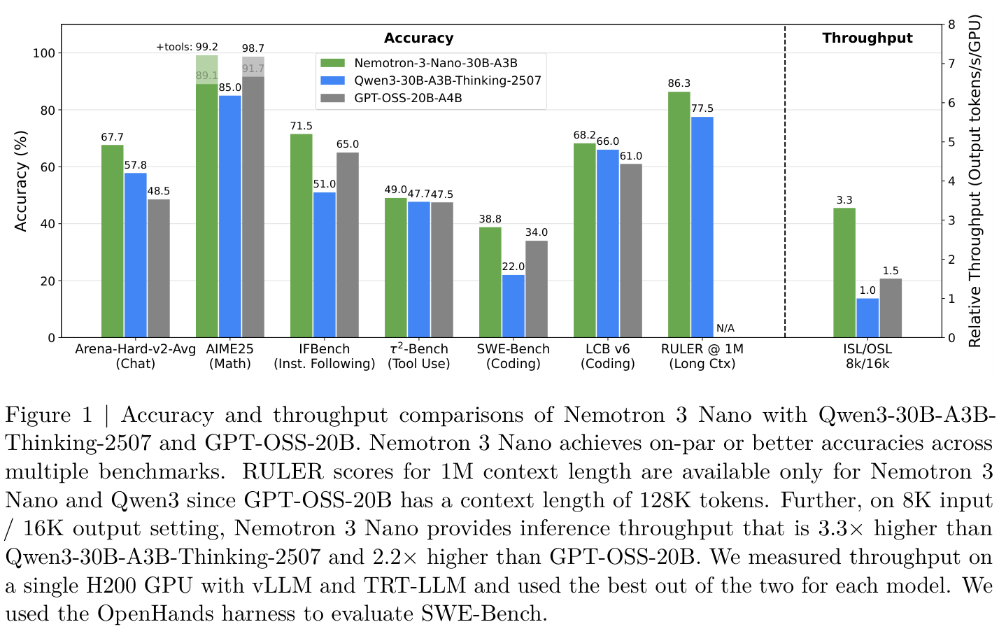
（接原文第 1 页。）
分别使用 vLLM 和 TRT-LLM，并为每个模型选择两者中效果更好的结果。测量 Nemotron 3 Nano 和 Qwen3 的吞吐量时，权重和激活均使用 FP8。对于 GPT-OSS-20B，我们的权重使用 mxfp4，激活使用 bfloat16。
我们采用三种方法对 Nemotron 3 Nano 进行后训练：SFT（§3.1）、多环境 RLVR（§3.2）和 RLHF（§3.3）。在 SFT 阶段，我们使用多样化的聊天、agent 和推理轨迹训练 Nemotron 3 Nano，使模型具备推理预算控制、推理开关控制以及结合工具的推理能力。在 RLVR 阶段，我们同时在所有环境中训练，使模型能力平稳、均衡地提升。在 RLHF 阶段，我们利用一个规模大、准确率高的 GenRM，提高 Nemotron 3 Nano 在关键聊天基准上的表现。
我们还使用 PTQ，将 Nemotron 3 Nano 从 bfloat16 量化到 FP8。这能够在准确率损失极小的情况下提高推理吞吐量（§4.3）。
随本报告一同发布的还有模型配方1及以下内容：
（数据列表接原文第 3 页。）
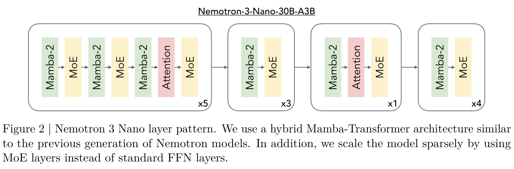
（接原文第 2 页的数据列表。）
报告的其余内容分为三个部分：预训练（§2）、后训练（§3）和量化（§4）。
本节重点介绍 Nemotron 3 Nano 30B-A3B Base 的主要特性，包括其架构、超参数以及预训练所用的数据。我们还展示，Nemotron 3 Nano 30B-A3B Base 在一组基准上的准确率超过其他公开的先进模型。
Nemotron 3 Nano 30B-A3B Base 在此前 Nemotron-H（NVIDIA, 2025e）和 Nemotron 2 Nano（NVIDIA, 2025d）模型的 Mamba-Transformer 混合架构基础上，将标准 FFN 层替换为稀疏专家混合（MoE）（Shazeer et al., 2017）层。MoE 层帮助我们以较少的激活参数实现更高的准确率。Nemotron 3 Nano 30B-A3B Base 包含 31.6B 总参数，每次前向传播激活其中的 3.2B 参数（计入 embedding 层则为 3.6B）。为了获得最佳准确率，我们采用带共享专家的细粒度 MoE 架构（Dai et al., 2024）。MoE 层使用平方 ReLU 激活函数，以及采用 sigmoid 门控的标准可学习 MLP 路由器。我们不使用任何位置 embedding、dropout，也不在线性层中使用偏置。我们使用 RMSNorm 进行归一化，且 embedding 权重与投影权重不共享。
表 1 和图 2 展示了 Nemotron 3 Nano 的关键架构细节。
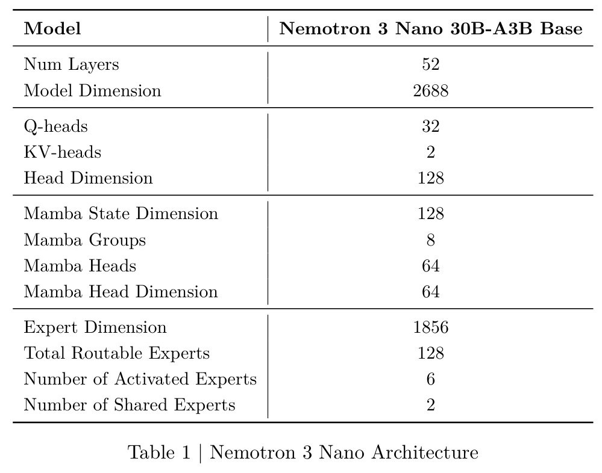
本小节介绍自 Nemotron Nano 2 以来新增至预训练语料的新数据集。我们将在 HuggingFace 上发布绝大部分新增数据，分为四个主要数据集。下面分别详细介绍。
我们首先使用一个基于快速模式匹配的网页代码分类器，从 Common Crawl 中筛选出代码页面。随后，对包含代码的 Common Crawl 页面应用修改后的 Nemotron-CC-Math 流程（Mahabadi et al., 2025），构建高质量代码预训练语料。
从原始 HTML 开始，我们使用 Lynx 渲染每份文档，它能够可靠地保留代码布局、缩进和行内技术元素。得到的文本进入基于 LLM 的清理阶段，使用 Phi-4 模型去除模板化的冗余内容，同时严格保留代码片段、配置块、API 参考资料和数学表达式。为确保仅包含与编程相关的文档，我们应用轻量级的代码质量相关性分类器，过滤非技术页面，并保留包含实质性或完整代码内容的文档。该流程生成了 4279.2 亿 token 的语料，其中公式规范为 LaTeX，代码块的结构得到忠实保留，噪声被降至最低。相较于以前经常损坏或截断代码示例的提取方法，我们的方法能够在大规模处理时可靠地恢复完整代码片段及其技术上下文。
我们从 GitHub 中那些被识别为现有语料尚未包含的仓库获取额外代码，同时收集截至 2025 年 4 月 15 日的近期数据。我们使用 NVIDIA（2025d）描述的同一流程整理数据，并删除与现有语料中已有文件完全重复或近似重复的文件。
除原始源代码语料外，我们还使用 Qwen3 32B LLM 合成了额外的自然语言与源代码混合文档。与 NVIDIA（2025e）描述的方法类似，我们以新增源代码数据为种子，提示模型生成问答对。此外，我们结合代码片段和完整源文件作为依据，提示模型生成学生与教师对话（仅 Python），以及代码审查式对话（Python/C++）。
沿用 Fujii et al.（2025）的代码改写工作，我们也发现使用 LLM 改写源代码能够提高下游代码生成准确率。我们使用 Qwen3 32B，结合风格引导代码改写（SGCR）和自包含优化改写（SCOR）提示（Fujii et al., 2025），以及我们自行设计的意图相近的提示，改写了全部原始 Python 源代码。为确保 LLM 改写的质量，我们在后处理阶段对每个改写文件检查语法错误，并使用 Pylint Python 静态检查工具评估代码质量的改善。
基于 LLM 的源代码改写可以看作将原始源代码转换为改进版本；我们进一步扩展这一概念，将其用于从一种语言到另一种语言的源代码文件转换（即代码转译）。使用 Qwen3 32B 时，我们发现，经这一转译流程从 Python 生成的 C++ token 能够提高下游 C++ 代码生成准确率，因此是对 C++ 子集的有效扩充。我们对源代码语料中的所有 Python 源文件应用了这一 Python 到 C++ 的转译流程。
对于通用英文网页抓取数据，我们在 https://huggingface.co/datasets/nvidia/Nemotron-CC-v2 的基础上新增三个较近期的 Common Crawl 快照（CC-MAIN-2025-18、CC-MAIN-2025-21、CC-MAIN-2025-26），使用相同的 Nemotron-CC 配方（Su et al., 2025）处理。全部合成改写均使用 Qwen3-30B-A3B（Yang et al., 2025a）。与 Nemotron Nano 2 一样，我们只使用 Medium-Quality、Medium-High-Quality 和 High-Quality 数据桶进行训练。
此前，我们只改写 Common Crawl 数据的 High-Quality 子集。为进一步扩充独特高质量 token 的语料，我们将五种提示（Su et al., 2025）应用于 110 个 Common Crawl 快照（CC-MAIN-2013-20 至 CC-MAIN-2025-26）的 Medium-High-Quality 数据，得到 2.1 万亿新增 token。
最后，我们采用一种新策略，使用 Qwen3-30B-A3B 将其他语言翻译为英文，以获取高质量英文 token。我们首先将当时最新的三个 Common Crawl 快照（CC-MAIN-2024-51、CC-MAIN-2025-08 和 CC-MAIN-2025-18）中九种语言（中文、法语、德语、意大利语、日语、波兰语、葡萄牙语、俄语、西班牙语）的文档翻译为英文。随后，我们对翻译子集应用 Nemotron-CC 质量分类器集成，仅保留 High-Quality 和 Medium-High-Quality 文档。此外，我们将五种 Nemotron-CC 改写提示中的四种应用于高质量数据，以生成更多独特 token。Nemotron 3 Nano 30B-A3B Base 的训练已经开始后，我们发现，一些缺乏信息量的翻译文档（例如日常对话、广告）获得了 Nemotron-CC 质量分类器的高分。为处理这一问题，我们在该数据集的发布版本中额外进行一轮基于 LLM 的质量过滤，移除了约 10.6% 的 token；内部消融实验表明，这使各项基准的准确率略有提高。
总体而言，我们从 Common Crawl 数据中整理或生成了超过 2.5 万亿新增 token。
该数据集包含面向 STEM 推理或科学编程等特定主题的多种合成数据集。下面详细介绍各个子集。
合成 Wikipedia 数据。我们使用 Qwen3-30B-A3B-Instruct-2507 修订英文 Wikipedia 文章，以改善清晰度与格式。我们丢弃消歧义页面和重定向页面，并删除参考文献、另见、注释和外部链接等章节。我们还指示模型删除未清理的 HTML 元素等无关内容。
合成数学教材数据。我们从 Nemotron-CC-Math（Mahabadi et al., 2025）生成结构清晰的教育性教材风格章节。我们评估每份文档的数学内容，并根据涉及的数学概念、复杂程度等多种因素，将其归入不同教育层级（例如小学、初中、高中）。我们保留包含本科及以上层级数学内容的文档，并将每份文档扩展成教材风格章节，加入定义、说明性例子等多种教学元素。
合成科学编程数据。以从 Nemotron-CC 检索到的 STEM 相关文档为种子数据，我们合成两类文档：（1）embedding 代码的文章：全面、深入、格式清晰的文章，探讨并以 Python 实现一个非平凡的、研究生或研究级别的科学或数学算法；（2）计算编程问题：一个高级的、计算性的、研究生或研究级别的编程问题及其 Python 解答。主要问题被分解为 5 至 15 个按逻辑排序的非平凡子步骤，每个子步骤由一个独立函数解决。我们提取主要问题、依赖关系、子步骤描述，以及每个函数的签名、文档字符串、函数体和返回语句，并排除其中任何部分缺失的样本。
合成跨领域代码数据。为生成更多样、更复杂的代码数据，我们开发了一种称为 InfiniByte 的新方法，将多个数据集交叉融合。应用于代码时，InfiniByte 汇集不同领域的概念，提出前所未见的问题，从而创建全新的编程问题。通过这种方式，InfiniByte 填补不同领域之间的问题空间，生成处于模型能力边界的问题，并模拟科学常常在两个或更多领域的交汇处取得进展的方式。
以我们具有突破性的 OpenCodeReasoning 数据集（Ahmad et al. (2025b)）中整理的竞赛编程题目列表为起点，我们系统地注入来自数学（OpenMathReasoning，Moshkov et al. (2025)）、物理（Physics Big，Zaharov et al. (2024)）、化学（IChO，Nguyen (2025)）和其他科学领域数据集的概念。我们为每个“问题、概念”组合生成多个候选问题，并依据以 LLM 为评审的评分准则，选出最佳候选问题；这些准则检验清晰度、难度以及是否遵循所采用的交叉融合策略。随后，我们使用 Qwen3-235B-A22B-Thinking-2507（Yang et al., 2025a）等推理模型，为每个新的编程问题生成解答。我们采用两种交叉融合策略：
InfiniByte 数据生成流程使用 NeMo Data Designer（The NeMo Data Designer Team (2025)）实现，这是 NVIDIA 先进的合成数据生成框架。这
（此句接原文第 7 页。）
（接原文第 6 页。）
使我们的复杂流程能够受益于框架的复合 AI 方法：通过 Jinja 模板确保概念具有适当依据，保证各阶段所需的结构化输出，引入反馈循环，以及执行数据验证和自动重试。
合成 STEM 推理。为了增强 STEM 领域的复杂推理能力，我们构建了推理问答（RQA）数据集。创建 RQA 有两个目标：
该数据集经过四个步骤生成。首先，我们以多样化的高级科学文本作为种子数据。从网页规模数据集 Essential-Web（Hojel et al., 2025）的 STEM 子集开始，我们使用 Essential-Web 分类体系筛选文档，保留满足以下条件的文档：
该过滤步骤得到约 1400 万份文档。接下来，我们按文档主题进行分层分级采样，以权衡种子文档数量与多样性。借助 Essential-Web 分类体系中的 Free Decimal Correspondence（FDC）数字主题代码，我们按照 FDC 代码的多个数量级，以层级轮转方式排列文档，从高层主题领域（例如物理、化学、数学、计算机科学）延伸到低层子领域（例如热力学、量子力学）。采用这一方法，可以对种子文档应用任意截断数量 N，确保给定文档数量下的最大多样性；虽然我们为前 900 万个样本生成了 RQA 样本，但最终选择前 450 万个用于训练。为限制每份种子文档的长度，我们对超过 4096 个字符的文档进行后处理，随机提取一个少于 4096 个字符的连续文本片段。
每份种子文档都作为上下文提供给 Qwen3-235B-A22B-Thinking-2507，提示模型以 STEM 内容为灵感，提出一个困难但可回答的研究生级科学推理问题。我们指示模型确保回答该问题不需要访问原始种子段落。如果样本未能在 8192 个推理 token 内生成问题，则将其丢弃。
最后，我们在第二次生成步骤中将该问题提交给 Qwen3-235B-A22B-Thinking-2507 回答，不再将种子段落作为上下文。我们过滤生成的推理轨迹和答案，去除模型特有的表达习惯，将其限制在 8192 个字符内，并与问题拼接为一个 RQA 样本。这一两步生成流程旨在最大程度地调动教师模型的推理能力，既用于从种子文档生成困难问题，也用于回答其自己提出的问题。得到的
（此句接原文第 8 页。）
（接原文第 7 页。）
预训练数据集包含 430 万个 RQA 示例，总计约 317 亿独特 token。
为进一步利用分层后的 STEM 种子文档，我们还制作了数据集的多样化问答（DQA）版本，使用按分层顺序排列的前 900 万份种子文档，总计约 80 亿 token。STEM DQA 数据集采用 Nemotron-CC（Su et al., 2025）展示的 DQA 提示与生成流程构建，该流程将源文档中的连续文本片段与简短问答对拼接。我们使用 Qwen3-30B-A3B 生成这些问答对。
RQA 和 DQA 数据生成流程均使用 NeMo Data Designer（The NeMo Data Designer Team (2025)）实现。
SFT 风格数据。与 Nemotron Nano 2 一样，我们在预训练中加入新增和更新后的代码、数学及 STEM SFT 数据集。详细合成方法与流程见此前工作（Toshniwal et al., 2024; Moshkov et al., 2025; NVIDIA, 2025a; Ahmad et al., 2025b,a; Majumdar et al., 2024）。我们还加入了来自 AceReason-Nemotron-1.1（Liu et al., 2025a）的额外数学与代码 SFT 样本。该集合涵盖广泛的提示来源，数学任务包括 NuminaMath（Li et al., 2024b）、OrcaMathWordProblems（Mitra et al., 2024）、MathInstruct（Yue et al., 2023）和 MetaMathQA（Yu et al., 2023）；代码任务包括 TACO（Li et al., 2023）、APPs（Hendrycks et al., 2021）、OpenCoder-Stage2（Huang et al., 2024）和 OpenCodeReasoning（Ahmad et al., 2025b）。这些提示的回答由 DeepSeek-R1（DeepSeek-AI, 2025a）生成。
我们的预训练语料涵盖 15 类数据。最大的组成部分是网页抓取数据，我们按照 Nemotron-CC 分类体系（Su et al., 2025）将其细分为五个基于质量的组：crawl-medium、crawl-medium-high、syn-crawl-medium-high、crawl-high 和 syn-crawl-high，分别涵盖中等、中高和高质量的抓取数据。除网页抓取数据外，混合数据还包括数学、Wikipedia、代码、nemotron-cc-code、学术文本、Crawl++、多语言数据，以及合成 SFT 风格数据；后者进一步分为 general-sft、stem-sft 和 code-sft 类别。Crawl++ 包含 OpenWebText、BigScience 和 Reddit 数据集。多语言数据包含 19 种语言：阿拉伯语、中文、捷克语、丹麦语、荷兰语、芬兰语、法语、德语、希伯来语、印地语、意大利语、日语、韩语、葡萄牙语、波兰语、俄语、西班牙语、瑞典语和泰语。我们设计数据混合方案时，通过为估计质量相近的数据源分配相近权重，平衡覆盖范围与质量。更高质量的数据集相应地得到优先考虑，在混合数据中获得更大权重。数据集质量评估与混合构建方法的更多细节见 Feng et al.（2024）和 NVIDIA（2025e）。
我们采用基于两个阶段的课程方案预训练 Nemotron 3 Nano 30B-A3B Base。第一阶段使用有助于数据多样性的混合数据；第二阶段主要使用高质量数据集（例如 Wikipedia）。我们在训练进度达到 94% 时切换到第二阶段。各阶段所用的数据混合如图 3 所示。
我们采用 Warmup-Stable-Decay 学习率（LR）调度，在总计 25 万亿 token 上预训练 Nemotron 3 Nano 30B-A3B Base。我们在前 84 亿 token 内将学习率 warmup 到最大值 \(10^{-3}\)。在训练的 80%（20 万亿 token）期间保持最大学习率，然后在最后 20% 的训练（5 万亿 token）期间衰减到最小值 \(10^{-5}\)。我们使用 AdamW（Loshchilov & Hutter, 2017）优化器，权重衰减为 0.1，\(\beta _{1} = 0.9\)，\(\beta _{2} = 0.95\)。
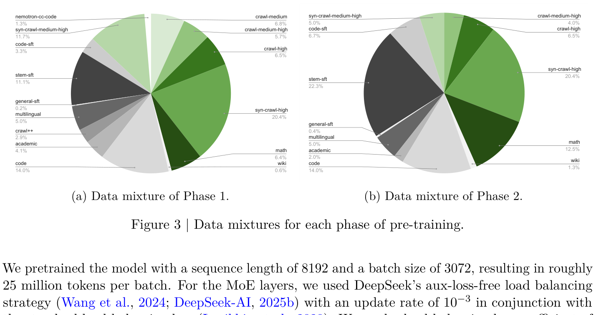
我们以 8192 的序列长度和 3072 的 batch 大小预训练模型，每个 batch 约包含 2500 万 token。对于 MoE 层，我们使用 DeepSeek 的无辅助损失负载均衡策略（Wang et al., 2024; DeepSeek-AI, 2025b），更新率为 \(10^{-3}\)，并结合标准负载均衡损失（Lepikhin et al., 2020）。负载均衡损失系数为 \(10^{-4}\)。
与 Nemotron 2 Nano 类似，我们在预训练末尾加入长上下文阶段（LC-Phase）。在 LC-Phase 中，我们进行持续预训练（CPT），赋予基础模型长上下文能力。我们采用 \(10^{-5}\) 的恒定学习率和 48 的全局 batch 大小，使用 8 路 CP、8 路 TP、8 路 EP 和 4 路 PP，在 H100 GPU 上训练。我们复用了 Nemotron Nano 2 的长上下文文档问答数据集，并将其规模扩大至三倍。我们还在 CPT 数据混合中加入少量面向检索的合成数据，其最大序列长度为 256k token，以改善部分 RULER 风格任务。在 LC 阶段的数据混合中，文档问答数据和面向检索的合成数据分别占 20% 和 1%，其余 79% 是按比例缩减的第二阶段数据。我们最初尝试仅在序列长度为 524,288（512k）token 的数据 batch 上进行 CPT，但发现短上下文基准分数受到轻微影响。因此，我们混合使用 512k 和 4k 序列，改善了短上下文基准分数，尤其是 MMLU-Pro 和代码任务，同时也提高了长上下文基准分数。LC-Phase 总共使用 1210 亿 token。
表 2 全面比较了通用知识、代码、数学、常识理解、阅读理解、多语言及长上下文基准上的准确率。评估设置遵循社区标准协议，以确保公平比较。所有评估结果均通过 Nemo Evaluator \(SDK^{2}\) 和 LM Evaluation Harness3 收集。为便于复现，评估设置的更多细节见 Nemo Evaluator SDK 的 configs 文件夹4；通过 NVIDIA 的
（关于评估容器的此句接原文第 11 页；第 10 页为表 2。）
2 https://github.com/NVIDIA-NeMo/Evaluator
3 https://github.com/EleutherAI/lm-evaluation-harness
4 https://github.com/NVIDIA-NeMo/Evaluator
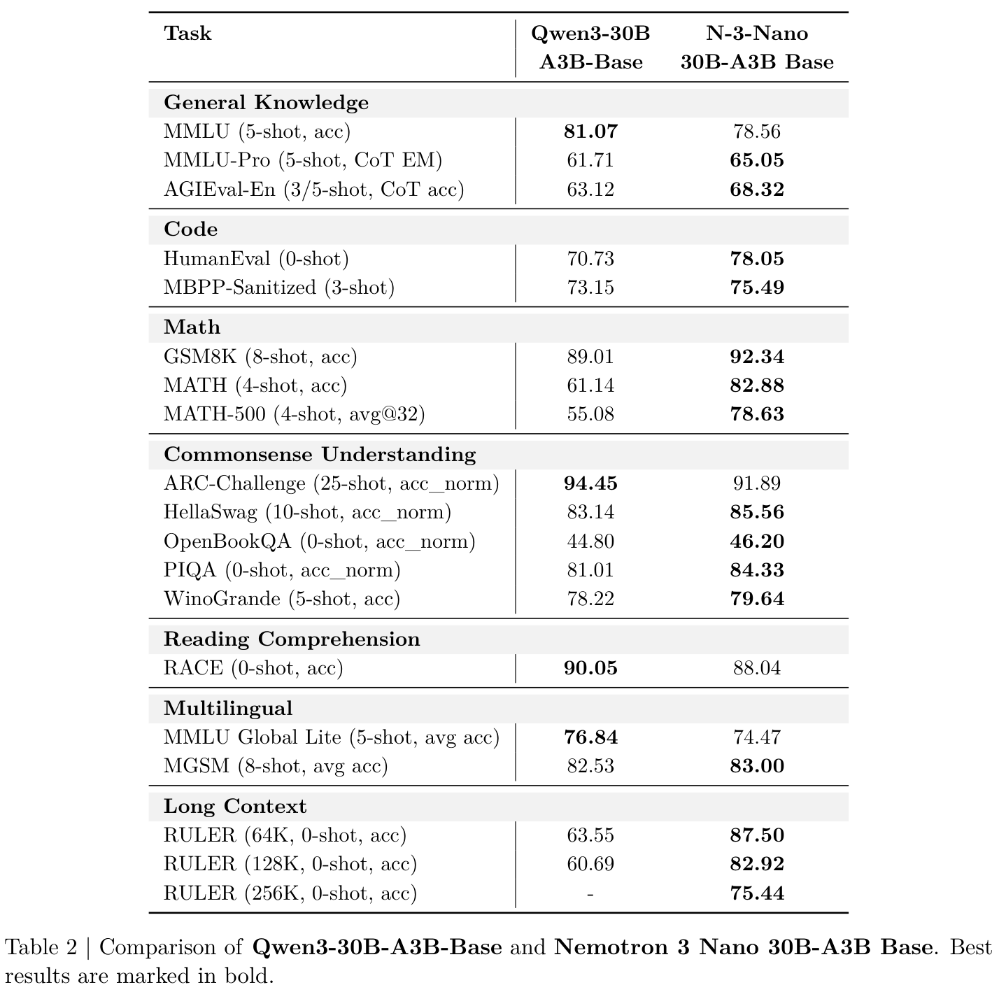
（接原文第 9 页。）
Nemo Evaluator SDK 打包、用于评估的开源 LM Evaluation Harness 容器可以在此处5找到。
对于 MATH-500 任务，我们采用采样策略，报告 avg@32 分数（从 32 个样本估计 pass@1）。对于其余任务，我们报告通过贪心 decoding（temperature = 0）得到的准确率（acc）或归一化准确率（acc_norm）。对于 HumanEval 和 MBPP 代码评估，我们采用与 Evalplus6 相同的清理方法。Few-shot 设置因基准而异，从 HumanEval 的 0-shot 到 ARC-Challenge 的 25-shot 不等。我们通过 MMLU Global Lite（对德语、西班牙语、法语、意大利语、日语、韩语、葡萄牙语和中文取平均）与 MGSM（对德语、西班牙语、法语、日语、俄语和中文取平均）评估多语言能力。
为更深入地了解模型能力，我们进一步在两个 MMLU-redux 变体上评估模型（见附录 B）。
相比 Nemotron Nano 2，我们显著扩大了 Nemotron 3 Nano 后训练的计算规模。值得注意的是，Nemotron 3 Nano 是我们首次尝试在后训练阶段扩大强化学习（RL）规模。多环境强化学习支持了这一 RL 扩展（见第 3.1 至 3.3 节），我们首次同时在全部环境中训练。我们采用 Nemo-Gym，这是一个包含大量 RL 环境的 RL 训练环境编排框架；它与作为 RL 训练框架的 Nemo-RL 集成，如第 3.2.4 节所述（NVIDIA, 2025b,c）。我们开源 Nemo-Gym 和 Nemo-RL，使更广泛的社区能够开展大规模 RL 训练，以及协作式、分布式 RL 环境构建。
本节其余部分讨论 Nemotron 3 Nano 的后训练方法，包括 §3.1 的 SFT、§3.2 的多环境强化学习，以及 §3.3 的 RLHF。最终评估结果见 §3.4。我们的后训练方法使模型在多种推理和 agent 任务上取得同类领先的表现，同时具备 token 效率、推理开关控制、推理预算控制和结合工具的推理能力。
自 Nemotron 2 Nano 发布以来，我们显著改进了 SFT 策略。我们提高数据集质量与多样性，新增多种数据，着重于多步骤、多轮 agent 任务。与预训练阶段使用的 SFT 数据不同，SFT 阶段的数据更侧重 agent 任务，并应用聊天模板。我们发布大部分训练数据，并开源 SFT 代码库。
通过聊天模板，可以以推理模式或非推理模式使用 Nemotron 3 Nano。
在推理模式下，我们针对以下对话场景调整推理流程：
5 https://catalog.ngc.nvidia.com/orgs/nvidia/teams/eval-factory/containers/lm-evaluation-harness
6 https://github.com/evalplus/evalplus
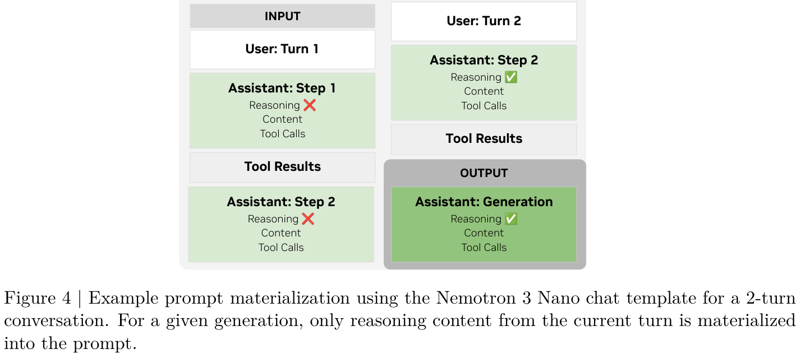
对于工具调用，我们遵循 GLM-4.5（Team, 2025a）和 Qwen3-Coder（Yang et al., 2025a）的观察，使用 XML 风格的特殊标签，以减少字符转义。
竞赛数学。对于数学，我们采用与 Nemotron Nano 2（NVIDIA, 2025d）相近的策略。不过，我们使用 GPT-OSS 120B（OpenAI, 2025）更新回答。此外，我们使用 Python 工具，以 GPT-OSS 120B 为教师模型，创建结合工具的推理轨迹。
竞赛代码。对于代码，我们采用与 Nemotron Nano 2 相同的数据，由 Ahmad et al.（2025b）的提示与 DeepSeek-R1-0528（DeepSeek-AI, 2025a）的回答组成。
对话式工具使用。我们生成合成的多轮轨迹，展示对话式工具使用。生成这些轨迹涉及一个被赋予待完成任务的用户、一个被指示帮助用户完成任务的 agent，以及一个工具执行环境；三者均由语言模型模拟。为使 SFT 训练数据中的轨迹仅包含这些实体的行为均与自身目标一致的样本，我们使用语言模型作为评审，对轨迹进行评估，并过滤掉评审认为某个实体的行为与其目标不一致的轨迹。我们在这一合成工具使用轨迹生成流程中使用 Qwen3-235B-A22B-Thinking-2507（Yang et al., 2025a）、Qwen3-32B（Yang et al., 2025a）、GPT-OSS-120b（OpenAI, 2025）和 Qwen3-235B-A22B-Instruct-2507（Yang et al., 2025a）生成数据。
长上下文。我们生成平均长度为 128k token、最大长度为 256k token 的合成数据，以提高长上下文表现，并在 RULER 任务的一个子集上验证。
形式化证明。对于 Lean 定理证明，我们首先通过基于 GPT-OSS-120B 的迭代改进流程，将在线数学社区（AoPS、Math StackExchange、MathOverflow）中的 58 万条自然语言定理自动形式化为 55 万条 Lean 4 陈述，并通过回译进行语义验证，以此整理 SFT 数据。随后，我们进行了大规模证明生成，
（形式化证明的数据生成说明接原文第 13 页。）
（接原文第 12 页。）
使用 Goedel-Prover-V2-32B，对每条陈述最多进行 4 次独立尝试和 8 轮自我纠正，得到 92 万条具有编译器验证解答的证明轨迹。过滤后，最终数据集包含 30 万个样本，每个样本将形式化定理陈述与成功的推理轨迹和证明配对。
多语言。我们以与 Nemotron Nano 2（NVIDIA, 2025d）相近的方式生成多语言数据。我们使用 Qwen2.5-Instruct 将现有英文后训练数据翻译为五种目标语言：法语、西班牙语、意大利语、德语和日语。流程逐行翻译输入，跳过代码、XML 标签、URL 等不可翻译内容。完成英文源文本翻译后，我们使用语言识别工具 https://pypi.org/project/langdetect/，过滤掉并非主要由目标语言 token 组成的样本。此外，我们排除具有特定失败模式的样本，即 Qwen 模型明确表示无法翻译源文本的情况。
多语言语料还包含 162 万条文本翻译样本，汇集自新闻评论数据集与专有来源。这些样本涵盖英文与五种目标语言之间的双向翻译任务。
终端使用。为教会 Nemotron 3 Nano 自主完成基于终端的任务，我们以 Terminal Bench（Team, 2025c）为基础生成一组多样化、可验证的任务。具体而言，我们将竞赛编程、竞赛数学和长上下文数据集中的数据改编为终端基准问题。我们还构建了需要数据分析、文件创建和文件操作的合成任务。此外，我们加入 SWE-Smith（Yang et al., 2025b）的数据，该数据集提供真实的软件工程任务。我们使用 Qwen3-Coder-480B-A35B-Instruct（Qwen, 2025）和 Kimi-K2-Instruct-0905（Team, 2025b），通过 Terminus-1 与 Terminus-2 agent（Team, 2025c）为每个任务生成动作轨迹。
通用聊天。我们使用 GPT-OSS-120B、Qwen3-235B-A22B-Thinking-2507 和 Qwen3-235B-A22B-Instruct-2507，为 LMSYS（Zheng et al., 2023）和 WildChat（Li et al., 2024d）数据集生成回答，创建 SFT 数据。再由同一个语言模型模拟用户并继续对话，将数据扩展为多轮形式。
指令遵循。我们采用 Tülu 3（Lambert et al., 2025）的方法创建针对性的指令遵循数据。我们使用语言模型模拟对话中的用户，种子包括 Nemotron-Personas-USA（Meyer & Corneil, 2025）的用户画像，以及 IFeval（Zhou et al., 2023）和 IFBench（Pyatkin et al., 2025）训练划分中的指令。我们提示用户语言模型生成一轮或多轮的精确指令遵循查询。随后使用 GPT-OSS-120B、Qwen3-235B-A22B-Thinking-2507 和 Qwen3-235B-A22B-Instruct-2507 回答用户查询。生成的数据首先经过过滤，仅保留所有轮次均通过 IFEval 和 IFBench 相应指令验证器实现的样本。之后再使用语言模型评审过滤，删除回答仅以平凡或表面方式遵循指令的样本。
安全性。我们从 Nemotron Content Safety v2（Ghosh et al., 2025）和 Gretel Safety Alignment v1（Gretel, 2024）数据集中汇集一组多样化的不安全提示，以覆盖内容安全风险，并从 Harmful Tasks（Hasan et al., 2024）和 Red-Team-2K（Luo et al., 2024）数据集中获取提示，以覆盖常见越狱技术。我们进一步加入来自 Nemotron Content Safety v2 的安全提示，平衡这一集合。
在 SFT 中，我们为不安全提示应用安全提示包装，使模型在维持用户参与的同时学会适当拒绝。我们实施多种拒绝策略，以保持良好的用户体验。例如，对于与自伤相关的提示，搭配鼓励使用适当自杀预防
（此句接原文第 14 页。）
（接原文第 13 页。）
求助热线的提示模板。我们使用内容安全分类器过滤回答，确保符合安全目标。
软件工程。为训练 Nemotron 3 Nano 的自主软件工程能力，包括代码探索、问题复现和错误修复，我们整理了一个源自真实 GitHub issue 的代码任务数据集。我们使用 SWE-Gym（Pan et al., 2025）和 R2E-Gym（Jain et al., 2025）数据集中的问题描述及容器化执行环境。我们以 Qwen3-Coder-480B-A35B-Instruct（Qwen, 2025）为教师模型，从三个开源 agent 执行框架——OpenHands（Wang et al., 2025a）、SWE-Agent（Yang et al., 2024）和 Mini-SWE-Agent（Yang et al., 2024）——蒸馏轨迹。
科学。科学数据集涵盖物理、化学和生物，由一个整合合成、真实和基于文档的种子来源的统一流程生成。我们首先整理一组富有挑战性的种子问题，来源包括 Nemotron Nano v2（NVIDIA, 2025d）及预训练语料中的科学文章。同时，我们将同一语料中的额外科学文章作为补充种子材料。每篇文章标注三项属性：（1）由基于 bert 的微调分类器确定的教育领域（Li et al., 2024a）；（2）内容层级（从小学至研究生）；（3）细粒度主题类别（例如生物、化学、数学、法律）。我们重点关注研究生层级子集，在向量数据库中为这些文档建立索引，并使用一组多样化的科学类查询提示，检索数千段高度相关的文本。这些检索片段作为生成多项选择题（MCQ）数据的基础，随后转为开放式问答（OpenQA）格式。
所有种子来源——合成、真实和文档检索——随后均通过 NeMo Data Designer（The NeMo Data Designer Team, 2025）处理。Data Designer 用于改写提示，生成多种格式与指令变体，并增强对不同提示风格的稳健性。SFT 阶段的推理轨迹使用 GPT-OSS 120B（OpenAI, 2025）生成的、结合 Python 工具的推理轨迹。关键在于，所有生成变体均经过严格的 LLM 评审过滤，确保严格遵循格式、保留意图，并维持高质量推理的一致性。在 RL 阶段，我们进一步引入针对性的提示和格式增强，以降低提示敏感性、提高泛化能力。
本工作开发的部分 STEM 数据集以多项选择题（\(MCQ^{7}\)）和开放式问答（OpenQA8）两种格式发布，支持 Nano-V3 训练及更广泛的下游研究。这些数据集完全整合进 RLVR 流程，并通过 NeMo Gym（NVIDIA, 2025b）提供 \(MCQ^{9}\) 和 OpenQA10 环境。该统一流程确保一致的质量标准，支持跨所有 STEM 领域的稳健强化学习评估和训练。
GenSelect。我们遵循 Toshniwal et al.（2025）的方法，训练模型从多个候选解答中识别最佳解答，以提高其作为 GenRM 的能力。我们改编数学和代码 SFT 数据中的问题，使用 GPT-OSS 120B（OpenAI, 2025）与 DeepSeek-R1-0528（DeepSeek-AI, 2025a）生成合成解答，再生成包含最终判定的选择推理轨迹。
CUDA。我们以 HuggingFace Transformers（Wolf et al., 2020）和 KernelBook（Paliskara & Saroufim, 2025）为种子，收集并合成 21k 个（PyTorch, Cuda C）配对。我们首先解析
（此句接原文第 15 页。）
7 https://huggingface.co/datasets/nvidia/Nemotron-RL-knowledge-mcqa
8 https://huggingface.co/datasets/nvidia/Nemotron-RL-knowledge-openqa
9 https://github.com/NVIDIA-NeMo/Gym/tree/main/resources_servers/mcqa
10 https://github.com/NVIDIA-NeMo/Gym/tree/main/resources_servers/equivalence_llm_judge
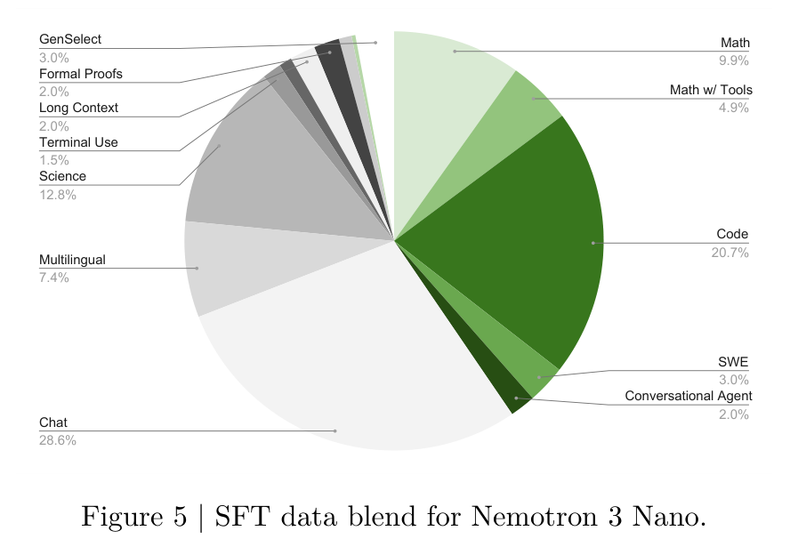
（接原文第 14 页。）
Transformers（Wolf et al., 2020）和 KernelBook（Paliskara & Saroufim, 2025）中的 PyTorch 代码，再使用 DeepSeek-R1-0528（DeepSeek-AI, 2025a）生成对应的 Cuda C 代码。我们仅保留 Cuda C 代码成功编译、并通过与 PyTorch 参考代码进行数值验证的 PyTorch、Cuda C 配对。
对于所有领域，我们采用统一的数据过滤流程，确保仅使用高质量、符合许可要求且可验证的样本训练。我们首先通过结构检查丢弃格式错误样本（例如存在工具调用却缺少工具定义）。随后，我们严格过滤表现出异常重复的推理轨迹，例如在滑动窗口内或整个轨迹中重复出现 n-gram；我们发现这强烈表明推理存在格式错误或质量较低。最后，根据对合成数据集的内部审计，我们观察到某些教师模型偶尔会生成隐含偏向特定政治实体或宣扬民族主义叙事的推理轨迹与最终回答。为缓解这一问题，我们应用针对性的关键词与正则表达式过滤器（例如“our nation/party […]”“our values”等模式），删除所有符合这类行为的轨迹。
确切的数据混合如图 5 所示（未列出的各数据集占比均低于 1%）。我们总共使用超过 1800 万个样本训练。对于每个数据集，我们根据在单任务设置下达到最优表现所需的大致数据量，确定加入的数据量。不同数据集的规模差异较大，因此我们采用动态采样方法，小数据集可能训练许多个 epoch，大数据集则仅训练少数几个 epoch。
Nemotron 3 Nano 支持两种不同的推理控制形式：推理开关控制和 token 预算控制。与 NVIDIA（2025d）类似，为实现推理开关控制，我们从随机选取的 10% 样本中移除推理轨迹；为实现预算控制，我们将 3% 的推理轨迹随机截断到不同推理预算，然后继续使用原始的推理后回答。
我们以 64 的 batch 大小训练 13000 步，并将序列打包到 256K 的序列长度。学习率为 \(5 \cdot 10^{-5}\)，学习率 warmup 为 800 步。我们使用序列级 MoE 负载均衡正则项，损失系数设为 \(10^{-4}\)。
我们采用统一的 RLVR 阶段，同时在所有环境中训练。我们发现，这使全部基准在整个训练过程中稳定提升；而单环境训练常常导致其他基准发生无法恢复的退化。我们进行两个这样的 RLVR 阶段：一个紧接 SFT，另一个在 RLHF 之后。
竞赛数学。我们使用 DAPO（Yu et al., 2025）和 SkyWorks math（He et al., 2025）数据集训练。这些数据集分别包含 17K 和 104K 个任务。
竞赛编程。我们使用 Ahmad et al.（2025b）的竞赛编程题。为减少验证时间，我们将单元测试数量限制为 50。过滤后剩余 22K 个任务。
问答。我们使用多种聚焦 STEM 领域的困难多项选择题数据集训练。其中的问题和答案根据参考文档中的信息生成。该数据集包含 135K 个任务。
结构化输出。我们训练 Nemotron 3 Nano，使其具有较强的 JSON schema 遵循能力。我们使用 NeMo Data Designer（The NeMo Data Designer Team, 2025）创建 RL 种子数据集。首先，使用 Qwen3-235B-A22B-Instruct-2507（Yang et al., 2025a），以多样化主题为条件构建（JSON schema、文档）配对。随后利用这些配对创建 RL 提示，要求模型按 schema 概括文档。为确保高度的语法有效性，流程实施严格的复杂度控制并使用拒绝采样，同时改变指令难度与措辞，以最大化输入多样性。该流程产生 9K 个任务。
在 RL 阶段，当输出精确满足 schema 约束时给予正奖励，否则不给奖励。为简单起见，我们不对输出的语义内容增加奖励。
指令遵循。训练期间使用两个指令遵循环境。第一个类似 NVIDIA（2025a）使用的 IFEval 风格环境，但将约束更新为 IFBench 训练集（Pyatkin et al., 2025）的约束。我们为该环境创建 46K 个任务。
第二个环境使用 LLM 作为评审，验证 agent 是否在多轮场景中遵循复杂指令，其中的指令可能相当细微。该环境受到 Multi-Challenge 基准（Deshpande et al., 2025）启发。我们总共为其创建 3K 个任务。
长上下文。我们使用 Qwen3-235B-A22B-Thinking-2507（Yang et al., 2025a），从预训练混合数据中面向多文档综合的子集生成具有挑战性的长上下文问答对。每个问题必须引用至少五份文档，总输入限制在 32k token。我们使用 Qwen3-235B-A22B-Instruct-2507（Yang et al., 2025a）作为 LLM 评审，评估模型生成的轨迹。该数据集包含 12K 个任务。
Agent 工具使用。我们使用两个环境提高工具使用能力。第一个是 Workplace Assistant，一个从 Styles（Styles et al., 2024）改编的多步骤可验证工具调用设置，也曾用于 Nemotron 2 Nano（NVIDIA, 2025d）。这是一个工具使用、多步骤 agent 环境，用于测试 agent 在工作场景中执行任务的能力。Workplace Assistant 包含一个沙盒环境，其中有五个数据库、26 个工具和 690 个任务。这些任务对应发送邮件、安排会议等常见业务活动。正确性通过执行 agent 发出的工具调用，并将结果与真实标准数据库状态比较来验证。
第二个环境是多轮对话式 agent 环境，测试 agent 的工具调用和主动询问能力。该环境包含约 1K 个任务，模拟复杂银行业务场景，例如帮助客户解除信用卡冻结或解决账户争议。Agent 行为的正确性通过执行其发出的工具调用，并将所得数据库状态与预定义真实标准比较来自动验证。
我们首先使用SFTcheckpoint，对全部强化学习（RL）任务进行能力测评。为将训练重点放在困难样本上，我们过滤掉 SFT checkpoint 已达到 100% 通过率的样本。随后采用 NVIDIA（2025a）提出的课程训练方法，在训练期间动态调整任务难度。
每个 batch 中，我们保持不同领域样本的固定比例。对于每个领域，我们以高斯函数建模目标通过率分布，从训练初期的高通过率（较简单）样本，逐步转向后期的低通过率（较困难）样本。高斯分布的目标均值随训练步数线性下降。每个 batch 内，不同领域的样本被打乱。这种高斯采样策略防止过度拟合过于简单或过于困难的样本，确保均衡的学习进程。
该方法能够在保留领域多样性、确保高效 batch 组成的同时，以受控、渐进的方式提高任务难度。图 6 展示 RL 训练过程中样本难度的变化。当训练进展进入平台期后，我们使用最佳 RL checkpoint 重新测评任务，构建新的课程，以进一步改善表现。
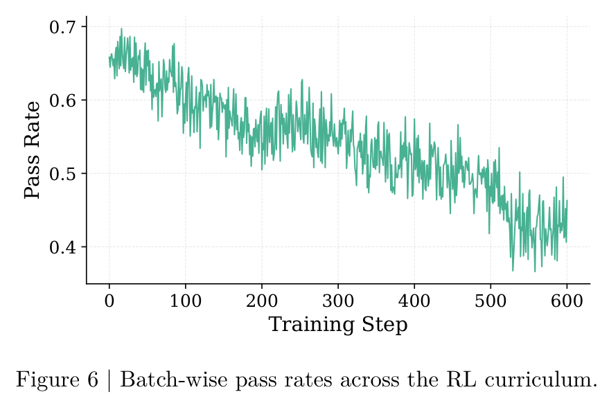
我们使用一个中间 SFT checkpoint，将课程采样与随机采样进行比较，两种情况下领域比例保持相同。如图 7 所示，课程采样确保训练过程中多个领域的学习保持稳定。相比之下，随机采样
（此句接原文第 18 页。）
（接原文第 17 页。）
使模型偏向更简单的任务，妨碍模型有效学习更具挑战性的任务。
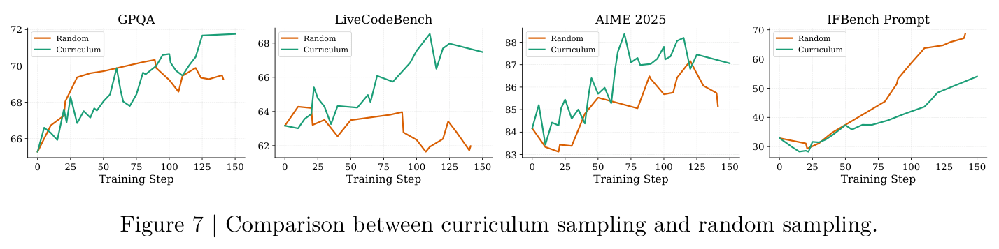
近期工作表明，仅对小模型进行 SFT 即可取得较强表现（Ahmad et al., 2025b; DeepSeek-AI, 2025a）。本研究考察 RLVR 是否能够超越经过充分微调的 SFT 基线。如图 8 所示，我们将 RLVR 训练过程中模型的准确率与两个 SFT checkpoint 比较：
结果表明，即使训练时间相对较短，RLVR 仍在所有评估领域中持续超过或达到充分微调的 SFT 模型的准确率。
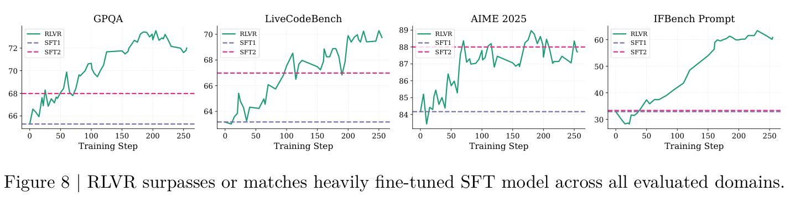
当前，模型后训练前沿的 RL 主要通过扩展到越来越多样化的任务或环境，让模型学习日益通用的能力。将 RL 扩展到多个环境，需要高性能、可扩展、标准化的接口，以协调轨迹生成与训练。为使用一个标准框架应对规模扩展中的性能和可扩展性挑战，我们采用 NeMo Gym（NVIDIA, 2025b）和 NeMo RL（NVIDIA, 2025c），使大规模 RL 能在多种不同环境或验证器上开展。
NeMo Gym 基于服务器抽象。Gym 有三种核心服务器：（1）agent；（2）模型；（3）资源。Agent 服务器实现 RL 环境的轨迹生成内核。模型服务器封装 vLLM（Kwon et al., 2023）等推理引擎，提供提示与回答 API，同时谨慎保留 RL 所需的 token、推理对数概率数据和元数据。资源服务器提供验证 API，用于计算给定轨迹的奖励。
我们的 Nemotron Nano 3 RLVR 实验均基于 NeMo RL 与 NeMo Gym 集成的基础设施：NeMo RL 作为 RL 训练循环控制器，使用 Megatron-Core（Shoeybi et al., 2020）进行大规模模型训练，并通过 NeMo Gym 与 vLLM 路由全部轨迹生成。
我们使用带掩码重要性采样的同步 GRPO 训练 Nemotron 3 Nano，以缓解训练与推理的不一致（Shao et al., 2024; Team et al., 2025; Yao et al., 2025）。每步使用 128 个提示，每个提示生成 16 个回答。训练 batch 大小为 2048，使更新保持 on-policy。为进一步稳定训练，我们还冻结 MoE 路由器权重。我们采用无辅助损失负载均衡方法，并持续更新专家偏置（Wang et al., 2024）。
整个训练过程使用 49K 的最大生成长度。我们采用超长样本过滤（Yu et al., 2025），发现这有助于提高推理密集型基准的表现。
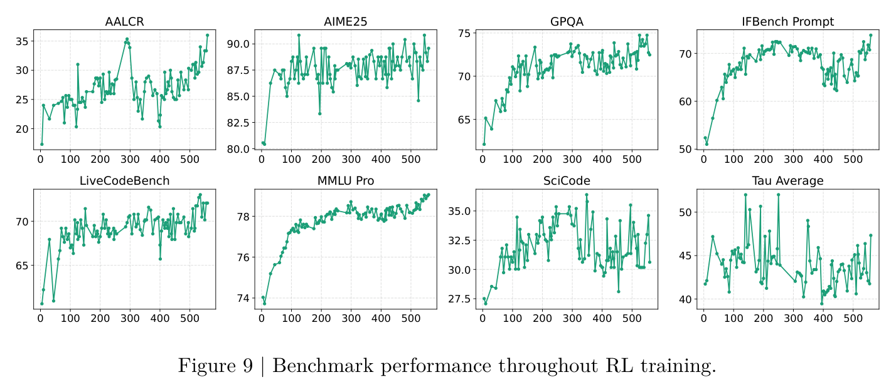
许多近期工作（Liu et al., 2025b; Wang et al., 2025b; Chen et al., 2025）表明，GenRM 的泛化能力优于传统 Bradley-Terry 模型，能够降低 RLHF 期间 reward hacking 的风险。为训练准确、稳健的 GenRM，我们利用大规模强化学习。在 Wang et al.（2025b）方法的基础上，我们使用 GRPO 算法，将 Qwen3-235B-A22B-Thinking-2507（Yang et al., 2025a）训练为 GenRM。给定对话历史、新用户请求及两个候选助手回答，GenRM 首先推理分析两份回答的优缺点，随后分别为每份回答生成有用性评分，以及一个排序评分。GenRM 训练中，每个 batch 使用 128 个提示，每个提示生成 8 个回答，并对完整 batch 进行一次 gradient 更新。我们将奖励定义为：
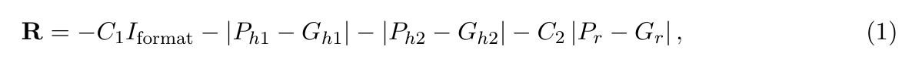
其中，\(P_{r}\)、\(G_{r}\) 表示预测和真实标准偏好排序；\(P_{h1}\)、\(G_{h1}\)、\(P_{h2}\)、\(G_{h2}\) 分别表示回答 1 和回答 2 的预测及真实标准有用性评分；\(I_{format}\) 指示
（公式符号说明接原文第 20 页。）
（接原文第 19 页。）
预测是否违反格式要求；\(C_{1}\) 和 \(C_{2}\) 是控制权重的超参数。我们设置 \(C_{1} = 10\)、\(C_{2} = 1\)。
我们使用 HelpSteer3（Wang et al., 2025b）、lmarena-ai/arena-human-preference-140k（Chiang et al., 2024）中便于商业使用的子集，以及合成安全混合数据（详见附录 D）训练模型。数据集中，单独的有用性评分范围为 1 至 5，分数越高代表越有用；排序评分范围为 1 至 6，其中 1 表示回答 1 远优于回答 2，6 表示回答 2 远优于回答 1（Wang et al., 2025b）。我们通过交换两个回答的位置来增强每个样本，防止位置偏差。图 10 表明，随着训练推进，GenRM 在 RM-Bench（Liu et al., 2024）、JudgeBench（Tan et al., 2024）和内部验证集上的表现稳步提高。
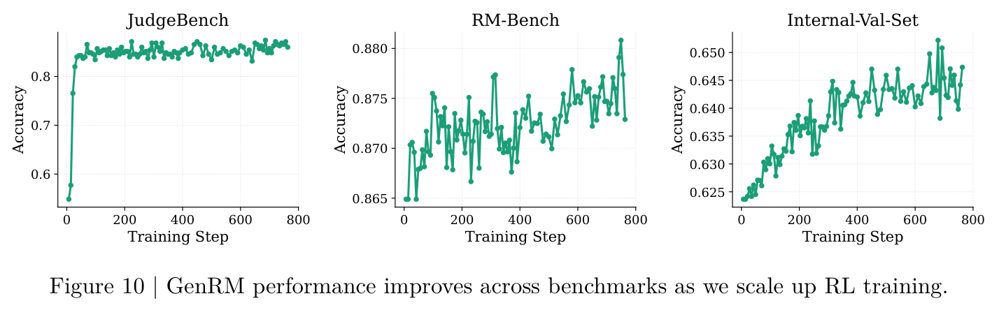
训练好 GenRM 后，我们在同一组提示上进行 RLHF。与 RLVR 相同，我们每个 batch 使用 128 个提示，每个提示生成 16 个回答。直接比较 \(N\) 个回答的所有配对，每个提示需要 \(N(N-1)/2\) 次 GenRM 调用，其成本按平方增长，\(N\) 较大时会昂贵到难以承受。\(N = 16\) 个回答时，每个提示需要 120 次比较。我们改为采用环形比较策略，每个回答只与其后继比较：\((r_{1}, r_{2})\)、\((r_{2}, r_{3})\)、…、\((r_{N-1}, r_{N})\)、\((r_{N}, r_{1})\)，恰好进行 \(N\) 次比较。这将计算成本从 \(O(N^{2})\) 降至 \(O(N)\)，同时仍将所有回答连接在一个比较图中。每个回答还会在不同位置被评判两次，以缓解位置偏差。
对于每次成对比较 \((r_{i}, r_{j})\)，GenRM 分别生成有用性评分 \(s_{i}\)、\(s_{j} \in [1, 5]\) 和排序评分 \(s_{r} \in [1, 6]\)。当 \(s_{i} = s_{j}\) 时，我们进一步使用一个简单的平局打破机制：
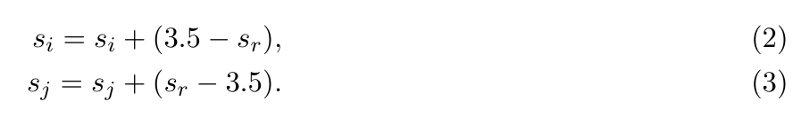
随后，对回答 \(r_{i}\) 在两次对局中的评分取平均，得到其基础奖励 \(R_{i}^{(base)}\)。
使用基础奖励训练时，我们发现回答长度可能随着 RLHF 训练推进而快速增加。这与 reward hacking 不同，因为长度增加主要来自推理轨迹，而 GenRM 只评判最终答案。这与 DeepSeek-AI（2025a）的观察类似：模型投入更多推理时计算，以获得更高奖励。不过，与数学和代码等推理密集型任务不同，RLHF 数据集中的提示通常并不
（此句接原文第 21 页。）
（接原文第 20 页。）
需要大量推理。为减少冗余思考，我们提出在 RLHF 期间使用组相对长度控制机制。具体而言，对于每个提示，我们生成一组 \(N\) 个候选回答 \(\{r_{1}, r_{2}, \ldots , r_{N}\}\)。每个回答 \(r_{i}\) 分解为推理部分 \(r_{i}^{(think)}\) 和答案部分 \(r_{i}^{(answer)}\)，对应长度分别为 \(\ell _{i}^{(think)}\) 与 \(\ell _{i}^{(answer)}\)。
长度归一化奖励调整。我们计算零均值、组相对的长度奖励，鼓励组内较短回答。对于推理部分，首先在组内归一化长度：
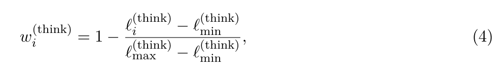
其中，\(\ell _{min}^{(think)} = min_{j} \ell _{j}^{(think)}\)，\(\ell _{max}^{(think)} = max_{j} \ell _{j}^{(think)}\)。为确保调整在组内总和为零（保留整体奖励尺度），我们对权重进行中心化：
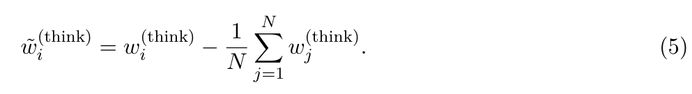
对答案长度执行相同流程，得到 \(\tilde{w}_{i}^{(answer)}\)。回答 \(r_{i}\) 的最终奖励为：
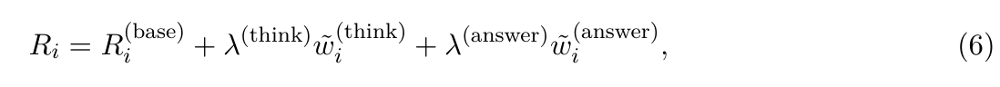
其中，\(R_{i}^{(base)}\) 是成对比较得到的基础奖励，\(\lambda ^{(think)}\)、\(\lambda ^{(answer)}\) 是控制长度惩罚强度的系数。我们设置 \(\lambda ^{(think)} = 0.5\)、\(\lambda ^{(answer)} = 0.5\)。
由质量门控的简洁性奖励。为进一步鼓励简洁回答而不牺牲质量，我们为达到最高质量档评分的最短回答引入可选奖励。令 \(\tau _{p}\) 表示组内评分的第 \(p\) 百分位阈值。对于推理长度最短的回答 \(r_{k}\)：
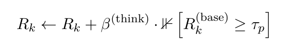
类似地，对于答案长度最短的回答 \(r_{m}\)：
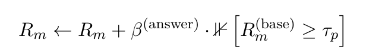
其中，\(\beta ^{(think)}\) 和 \(\beta ^{(answer)}\) 分别是推理和答案的简洁性奖励，⊮[·] 是指示函数。我们设置 \(\beta ^{(think)} = 0.5\)、\(\beta ^{(answer)} = 0.5\)，\(\tau _{p} = 80\)。
该机制确保：（1）长度惩罚是每个提示组内的相对惩罚，而非绝对惩罚，避免对本身复杂的问题产生偏差；（2）简洁性奖励仅授予高质量回答，防止模型学会生成简短但低质量的答案。我们观察到，在不牺牲准确率的情况下，训练期间的冗长程度降低了 30%。
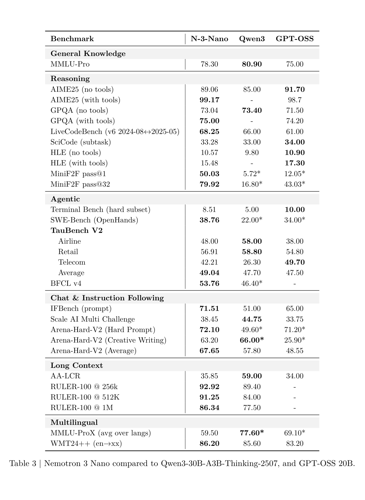
我们在广泛的成熟基准上评估 Nemotron 3 Nano，涵盖数学和科学推理、编程、agent 工具使用、指令遵循、长上下文理解及多语言能力。表 3 汇总最终结果。
所有评估结果均通过 Nemo Evaluator \(SDK^{11}\) 收集，大部分基准还使用 Nemo Skills Harness12。为便于复现，通过 NVIDIA 的 Nemo Evaluator SDK 打包、用于评估的 Nemo Skills 开源容器可以在此处13找到。除 Nemo Skills 外，评估还使用专门打包的 Tau-2 Bench、ArenaHard v2 和 \(AA_{LCR}\) 容器。评估设置的更多细节见 Nemo Evaluator SDK 的 configs 文件夹14。以下基准尚未接入我们的开源工具，因此使用其官方开源实现：Terminal Bench、SWE-Bench 和 Scale AI Multi Challenge。
对于数学和 STEM 推理，我们在 AIME25（带工具与不带工具）、GPQA（Rein et al., 2023）、LiveCodeBench v6（Jain et al., 2024）、SciCode（Tian et al., 2024）和 Humanity’s Last Exam（Phan et al., 2025）上评估。我们还加入 MMLU-Pro，评估通用学术及知识密集型推理。
Agent 与工具增强能力通过 TerminalBench、SWE-Bench（OpenHands）（Jimenez et al., 2023; Wang et al., 2025a）、TauBench V2（航空、零售、电信）（Barres et al., 2025）和 BFCL v4（Patil et al., 2025）衡量；各基准通过单元测试、数据库状态转换或结构化 schema 约束提供可验证奖励信号。
指令遵循与对话能力使用 IFBench、Scale AI Multi-Challenge 和 Arena-Hard-V2（Li et al., 2024c）评估。这些基准考察多约束指令、与偏好对齐的聊天行为，以及对用户意图的忠实程度。对于 Arena-Hard-V2，我们遵循 Yang et al.（2025a），使用 GPT-4.1 作为评审。
长上下文表现使用 256k、512k 和 1M token 的 RULER-100（Hsieh et al., 2024）以及 AA-LCR 评估，考察极长上下文中的检索、稳定性和 CoT 连贯性。RULER-100 在关闭推理时评估，AA-LCR 在开启推理时测量。
对于多语言能力，我们报告 MMLU-ProX（Xuan et al., 2025）和 \(WMT24++\)（en→xx）（Deutsch et al., 2025）上的结果，涵盖多种高资源语言中的推理与翻译设置。
与 GPT-OSS 20B 和 Qwen3-30B-A3B-Thinking-2507 比较时，只要可用，我们就采用官方报告的数值；如果某项基准未被报告，则使用 ArtificialAnalysis（AA）15 的数值；如果两个来源均未提供结果，我们可能按照官方评估协议自行计算分数。
表 3 全面比较三个模型的表现。Nemotron 3 Nano 表现强劲，在所有类别中均超过 GPT-OSS 20B 和 Qwen3-30B-A3B-Thinking-2507。在推理基准上，Nemotron 3 Nano 超过 Qwen3 模型，并且
（比较结果说明接原文第 24 页。）
11 https://github.com/NVIDIA-NeMo/Evaluator
12 https://github.com/NVIDIA-NeMo/Skills
13 https://catalog.ngc.nvidia.com/orgs/nvidia/teams/eval-factory/containers/nemo_skills
14 https://github.com/NVIDIA-NeMo/Evaluator
15 https://artificialanalysis.ai/
（接原文第 23 页。）
能够与此前在这些类别中表现最佳的 GPT-OSS 竞争。在 agent、聊天和长上下文类别中，Nemotron 3 Nano 显著超过另外两个模型，展示了我们后训练流程的实力。
以 BF16 完成模型后训练后，我们使用 ModelOpt16 与 Megatron-LM 进行 PTQ，将模型量化为 FP8。
对于 PTQ 校准，我们使用后训练推理 SFT 数据集中一个包含 1K 样本的小子集。相较 cnn_dailymail 数据集，基于后训练 SFT 数据的校准数据带来略好的准确率恢复。
我们还进行消融实验，使用由 BF16 模型 on-policy 生成结果整理的校准数据进行 PTQ，但相比基于 SFT 的校准数据集，未观察到准确率恢复方面的收益。
为在提高效率的同时保留准确率，我们采用选择性量化策略。我们进行量化敏感性分析，并探索一组混合精度模型的量化配置。研究表明，自 attention 层（Nemotron 3 Nano 的 52 层中有 6 层）是最敏感的组件，因此保持 BF16。我们还发现，输入自 attention 层的 Mamba 层也较敏感，因此同样保持 BF16。总体而言，将 6 个自 attention 层和 6 个 Mamba 层保持为 BF16，在准确率恢复和效率权衡上取得了理想配置。
模型权重、激活和 KV cache 量化为 FP8。所有 Mamba 层内的 Conv1D 均保持 BF16。
表 4 比较 Nemotron 3 Nano FP8 与 BF16 在多个基准上的准确率。总体而言，相比 BF16 模型，FP8 模型准确率恢复率的中位数约为 99%。
为验证选择性量化策略的有效性，并更好地理解准确率与效率的权衡，我们评估多种量化配置。我们通过对不同模型组件应用 PTQ 进行消融研究。具体考察三个因素：attention 层量化（BF16 或 FP8）、Mamba 层量化（FP8 或 BF16 与 FP8 混合），以及 KV cache 量化（BF16 或 FP8）。
如图 11 所示，FP8 量化的 KV cache 通过允许更大的 batch 大小，显著提高吞吐量。其他量化配置会损失准确率，而选择性量化即使对 KV cache 量化，仍能保留准确率。结果证实，将自 attention 层及其前面的 Mamba 层保留为 BF16，同时将其余层和 KV cache 量化为 FP8，可以取得较好的准确率与效率权衡。
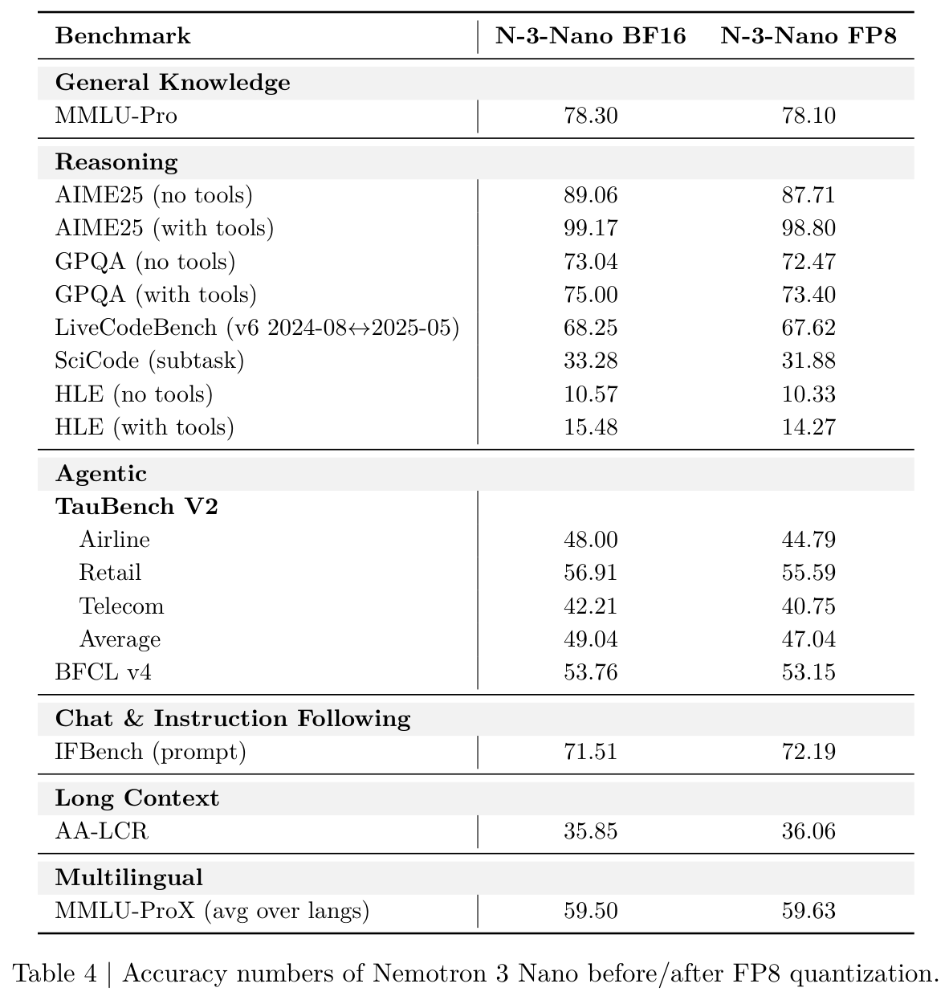
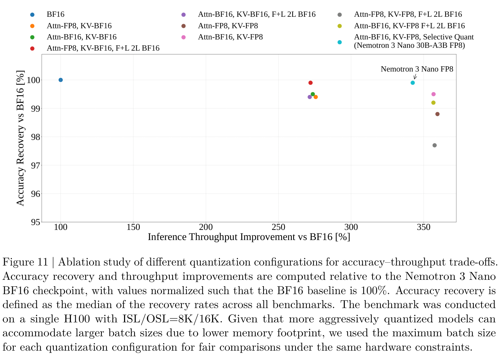
我们介绍了 Nemotron 3 Nano，一种用于 agent 推理的开放、高效的 MoE 式 Mamba-Transformer 混合模型。与具有竞争力的模型相比，Nemotron 3 Nano 的准确率更好或相当，同时推理吞吐量最高提高至 3.3 倍。Nemotron 3 Nano 支持最长 100 万 token 的上下文。我们在 HuggingFace 上发布了基础模型（Nemotron 3 Nano 30B-A3B Base）和最终模型（Nemotron 3 Nano 30B-A3B）的权重。除权重外，我们还开源了训练配方、数据和代码。
感谢以下人员为 NVIDIA Nemotron 3 Nano 作出的宝贵贡献。
预训练数据。Abhinav Khattar, Aleksander Ficek, Alisa Liu, Arham Mehta, Asif Ahamed, Ayush Dattagupta, Benedikt Schifferer, Brandon Norick, Branislav Kisacanin, Dan Su, Dane Corneil, Daria Gitman, Dhruv Nathawani, Dima Rekesh, Divyanshu Kakwani, Edgar Minasyan, Eileen Long, Ellie Evans, Eric Tramel, Evelina Bakhturina, Felipe Soares, Feng Chen, Gantavya Bhatt, George Armstrong, Igor Gitman, Ivan Moshkov, Jane Polak Scowcroft, John Kamalu, Johnny Greco, Joseph Jennings, Jupinder Parmar, Kezhi Kong, Markus Kliegl, Maarten Van Segbroeck, Matvei Novikov, Mehrzad Samadi, Miguel Martinez, Mohammad Shoeybi, Mostofa Patwary, Nabin Mulepati, Oleksii Hrinchuk, Rabeeh Karimi Mahabadi, Rima Shahbazyan, Riyad Islam, Roger Waleffe, Rohit Watve, Sadegh Mahdavi, Sanjeev Satheesh, Sean Narentharen, Shrimai Prabhumoye, Shubham Pachori, Shubham Toshniwal, Shuoyang Ding, Somshubra Majumdar, Stephen Ge, Sumeet Kumar Barua,
（贡献者名单接原文第 27 页。）
（接原文第 26 页的预训练数据贡献者名单。）
Suseella Panguluri, Syeda Nahida Akter, Vahid Noorozi, Vitaly Kurin, Vitaly Lavrukhin, Wasi Uddin Ahmad, Wei Du, Wei Ping, Yejin Choi, Yev Meyer, Ying Lin, Zihan Liu
架构。 Abhinav Khattar, Bita Darvish Rouhani, Deepak Narayanan, Ilya Loshchilov, Jatin Mitra, Joey Guman, Mohammad Shoeybi, Mostofa Patwary, Kezhi Kong, Krishna C. Puvvada, Maor Ashkenazi, Nidhi Bhatia, Pavlo Molchanov, Rabeeh Karimi Mahabadi, Rasoul Shafipour, Ritika Borkar, Roger Waleffe, Ryan Prenger, Sanjeev Satheesh, Venmugil Elango, Yonggan Fu
预训练软件。 Aarti Basant, Ashwath Aithal, Abhinav Khattar, Deepak Narayanan, Duncan Riach, Eric Harper, Hexin Wang, Jared Casper, Jimmy Zhang, Kezhi Kong, Mike Chrzanowski, Nima Tajbakhsh, Pranav Prashant Thombre, Roger Waleffe, Russell J. Hewett, Seonmyeong Bak, Shiqing Fan, Vijay Korthikanti, Xiaowei Ren, Yashaswi Karnati, Zijie Yan
预训练。 Abhinav Khattar, Brandon Norick, Dan Su, Eric Tramel, Deepak Narayanan, John Kamalu, Joseph Jennings, Jupinder Parmar, Markus Kliegl, Miguel Martinez, Mohammad Shoeybi, Mostofa Patwary, Kezhi Kong, Kevin Shih, Rabeeh Karimi Mahabadi, Roger Waleffe, Ryan Prenger, Shrimai Prabhumoye, Sanjeev Satheesh, Syeda Nahida Akter, Ying Lin
长上下文。 Boris Ginsburg, Cheng-Ping Hsieh, Dan Su, Dima Rekesh, Faisal Ladhak, Fei Jia, John Kamalu, Kezhi Kong, Krishna C. Puvvada, Markus Kliegl, Mostofa Patwary, Roger Waleffe, Samuel Kriman, Sanjeev Satheesh, Shantanu Acharya, Simeng Sun, Ushnish De
后训练软件。 Adi Renduchintala, Alexander Bukharin, Ali Taghibakhshi, Banghua Zhu, Brian Yu, Duncan Riach, Frankie Siino, Gerald Shen, Jiaqi Zeng, Kezhi Kong, Li Ding, Luis Vega, Maanu Grover, Marc Romeijn, Parth Chadha, Peter Jin, Soumye Singhal, Terry Kong, Tugrul Konuk, Yi-Fu Wu, Yubo Gao
后训练。 Abhibha Gupta, Adi Renduchintala, Akanksha Shukla, Aleksander Ficek, Alexander Bukharin, Ameya Sunil Mahabaleshwarkar, Banghua Zhu, Besmira Nushi, Branislav Kisacanin, Cheng-Ping Hsieh, Charles Wang, Damon Mosk-Aoyama, Daria Gitman, Dhruv Nathawani, Dima Rekesh, Edgar Minasyan, Edward Lin, Evelina Bakhturina, Fei Jia, Felipe Soares, Feng Chen, George Armstrong, Grigor Nalbandyan, Haifeng Qian, Hayley Ross, Igor Gitman, Ivan Moshkov, Jeffrey Glick, Jiaqi Zeng, Jian Zhang, Jie Lou, Julien Veron Vialard, Junkeun Yi, Katherine Luna, Khushi Bhardwaj, Krishna C. Puvvada, Luis Vega, Makesh Narsimhan Sreedhar, Matvei Novikov, Mehrzad Samadi, Mengru Wang, Michael Evans, Nikolai Ludwig, Oleksii Hrinchuk, Oleksii Kuchaiev, Olivier Delalleau, Ouye Xie, Peter Jin, Pritam Gundecha, Prasoon Varshney, Rima Shahbazyan, Ritu Gala, Sadegh Mahdavi, Sahil Modi, Sanjay Kariyappa, Sean Narenthiran, Shantanu Acharya, Shubham Toshniwal, Shuoyang Ding, Somshubra Majumdar, Soumye Singhal, Stephen Ge, Sugam Dipak Devare, Suseella Panguluri, Tugrul Konuk, Vahid Noroozi, Venkat Srinivasan, Vitaly Lavrukhin, Wasi Uddin Ahmad, Wei Du, Yev Meyer, Yian Zhang, Yoshi Suhara
评估、安全与发布。 Aaron Grattafiori, Barnaby Simkin, Besmira Nushi, Bilal Kartal, Christopher Parisien, Daniel Rohrer, David Mosallanezhad, Eileen Peters Long, Erick Galinkin, Fay Wang, Ferenc Galko, Gorkem Batmaz, Jane Polak Scowcroft, Katherine Luna, Khushi Bhardwaj, Leon Derczynski, Michael Boone, Michael Evans, Piotr Januszewski, Rich Harang, Rishabh Garg, Riyad Islam, Sanjay Kariyappa, Sanjeev Satheesh, Shaona Ghosh, Wojciech Prazuch, Yoshi Subara, Zhen Dong, Zijia Chen
基础设施。 Aaron Blakeman, Anubhav Mandarwal, Alex Kondratenko, Aleksandr Shaposhnikov, Ashwin Poojary, Brandon Soubasis, Collin Neale, Dong Ahn, Evan Briones, Gargi Prasad, Harsh Sharma, Herman Sahota, Himanshu Soni, Jining Huang, Kumar Anik, Maer Rodrigues de Melo, Nikhil Jukar, Pasha Shamis, Rick Izzo, Ruoxi Zhang, Satish Pasumarthi, Sergey Kashirsky, Shelby Thomas, Stefania Alborghetti
量化。 Aditya Vavre, Akhiad Bercovich, Ameya Sunil Mahabaleshwarkar, Amnon Geifman, Asma Kuriparambil Thekkumpate, Ben Lanir, Bilal Kartal, Chenhan Yu, Daniel Afrimi, Darko Stosic, Dusan Stosic, Ganesh Ajjanagadde, Huizi Mao, Ido Shahaf, Jenny Chen, Kai Xu, Nave Assaf, Omer Ullman Argov, Ran Zilberstein, Sharath Turuvekere Sreenivas, Sweta Priyadarshi, Tijmen Blankevoort, Tomer Asida, Yoshi Suhara, Zach Moshe, Zijia Chen
推理。 Amir Klein, Amit Zuker, Chenghao Zhang, Daniel Afrimi, Daniel Serebrenik, Gal Hubara Agam, Helen Ngo, Joyjit Daw, Kan Zhu, Keshav Santhanam, Lawrence McAfee, Lucas Liebenwein, Luis Vega, Nave Assaf, Neta Zmora, Netanel Haber, Omer Ullman Argov, Peter Dykas, Pranav Prashant Thombre, Ran Zilberstein, Roi Koren, Shahar Mor, Shanmugam Ramasamy, Siddharth Singh, Suyog Gupta, Teodor-Dumitru Ene, Tomer Asida, Tomer Bar Natan, Vijay Korthikanti, Wanli Jiang, William Zhang, Yashaswi Karnati
部署。 Alexandre Milesi, Anahita Bhiwandiwalla, Huy C Nguyen, Huy Q Nguyen, Izzy Putterman, Manoj Kilaru, Maryam Moosaei, Pawel Morkisz, Tan Bui, Thanh Do
法律与合规。 Barnaby Simkin, Chantal Hwang, Chetan Mungekar, Dina Yared, Hiren Upadhyay, Iain Cunningham, Katherine Cheung, Laya Sleiman, Meredith Price, Michael Boone, Nikki Pope, Saori Kaji
市场营销。 Amelia Barton, Chintan Patel, Erik Pounds, Mark Cai, Natalie Hereth, Nicola Sessions, Nirmal Juluru, Shreya Gopal, Will Jennings
项目管理。 Amy Shen, Ann Guan, Bardiya Sadeghi, Daria Levy, Elena Lantz, Elliott Ning, Krzysztof Pawelec, Melissa Corpuz, Negar Habibi, Pinky Xu, Qing Miao, Ryan Timbrook, Seth Poulos, Smita Ithape, Twinkle Vashishth
产品。 Chris Alexiuk, Ellie Evans, Jane Polak Scowcroft, Jesse Oliver, Joey Conway, Tom Balough, Udi Karpas, Wenfei Zhou
领导团队。 Andrew Tao, Bita Darvish Rouhani, Boris Ginsburg, Bryan Catanzaro, Carlo del Mundo, Eileen Long, Eric Chung, Jane Polak Scowcroft, Jan Kautz, Jian Zhang, Joey Conway, Jonathan Cohen, Kari Briski, Mohammad Shoeybi, Mostofa Patwary, Oleksii Kuchaiev, Oluwatobi Olabiyi, Pavlo Molchanov, Ran El-Yaniv, Ran Zilberstein, Yonatan Geifman, Yejin Choi
Wasi Uddin Ahmad, Aleksander Ficek, Mehrzad Samadi, Jocelyn Huang, Vahid Noroozi, Somshubra Majumdar, and Boris Ginsburg. OpenCodeInstruct：面向代码 LLM 的大规模指令微调数据集。 arXiv 预印本 arXiv:2504.04030, 2025a.
Wasi Uddin Ahmad, Sean Narenthiran, Somshubra Majumdar, Aleksander Ficek, Siddhartha Jain, Jocelyn Huang, Vahid Noroozi, and Boris Ginsburg. OpenCodeReasoning：推动竞赛编程的数据蒸馏。 arXiv 预印本 arXiv:2504.01943, 2025b.
Joshua Ainslie, James Lee-Thorp, Michiel de Jong, Yury Zemlyanskiy, Federico Lebrón, and Sumit Sanghai. GQA：从多头 checkpoint 训练广义多查询 Transformer 模型, 2023. URL https://arxiv.org/abs/2305.13245.
Syeda Nahida Akter, Shrimai Prabhumoye, Eric Nyberg, Mostofa Patwary, Mohammad Shoeybi, Yejin Choi, and Bryan Catanzaro. 前置推理：预训练与后训练数据之间的协同作用。 arXiv 预印本 arXiv:2510.03264, 2025.
Victor Barres, Honghua Dong, Soham Ray, Xujie Si, and Karthik Narasimhan. τ2-Bench：在双控制环境中评估对话式 agent。 arXiv 预印本 arXiv:2506.07982, 2025.
Xiusi Chen, Gaotang Li, Ziqi Wang, Bowen Jin, Cheng Qian, Yu Wang, Hongru Wang, Yu Zhang, Denghui Zhang, Tong Zhang, et al. RM-R1：将奖励建模视为推理。 arXiv 预印本 arXiv:2505.02387, 2025.
Wei-Lin Chiang, Lianmin Zheng, Ying Sheng, Anastasios Nikolas Angelopoulos, Tianle Li, Dacheng Li, Hao Zhang, Banghua Zhu, Michael Jordan, Joseph E. Gonzalez, and Ion Stoica. Chatbot Arena：根据人类偏好评估 LLM 的开放平台, 2024.
Damai Dai, Chengqi Deng, Chenggang Zhao, RX Xu, Huazuo Gao, Deli Chen, Jiashi Li, Wangding Zeng, Xingkai Yu, Yu Wu, et al. DeepSeekMoE：迈向专家混合语言模型中的极致专家专业化。 arXiv 预印本 arXiv:2401.06066, 2024.
Tri Dao and Albert Gu. Transformer 是 SSM：通过结构化状态空间对偶构建广义模型与高效算法, 2024. URL https://arxiv.org/abs/2405.21060.
DeepSeek-AI. DeepSeek-R1：通过强化学习激发 LLM 的推理能力, 2025a. URL https://arxiv.org/abs/2501.12948.
DeepSeek-AI. DeepSeek-V3 技术报告, 2025b. URL https://arxiv.org/abs/2412.19437.
Kaustubh Deshpande, Ved Sirdeshmukh, Johannes Baptist Mols, Lifeng Jin, Ed-Yeremai HernandezCardona, Dean Lee, Jeremy Kritz, Willow E Primack, Summer Yue, and Chen Xing. MultiChallenge：面向前沿 LLM 的具有挑战性的真实多轮对话评估基准。 In Findings of the Association for Computational Linguistics: ACL 2025, pp. 18632–18702, 2025.
Daniel Deutsch, Eleftheria Briakou, Isaac Rayburn Caswell, Mara Finkelstein, Rebecca Galor, Juraj Juraska, Geza Kovacs, Alison Lui, Ricardo Rei, Jason Riesa, et al. WMT24++：将 WMT24 的语言覆盖扩展到 55 种语言和方言。 In Findings of the Association for Computational Linguistics: ACL 2025, pp. 12257–12284, 2025.
Steven Feng, Shrimai Prabhumoye, Kezhi Kong, Dan Su, Mostofa Patwary, Mohammad Shoeybi, and Bryan Catanzaro. 最大化数据潜力：通过两阶段预训练提高 LLM 准确率, 2024. URL https://arxiv.org/abs/2412.15285.
参考文献（续）
Kazuki Fujii, Yukito Tajima, Sakae Mizuki, Hinari Shimada, Taihei Shiotani, Koshiro Saito, Masanari Ohi, Masaki Kawamura, Taishi Nakamura, Takumi Okamoto, et al. 改写预训练数据可提升 LLM 的数学与代码表现。 arXiv 预印本 arXiv:2505.02881, 2025. URL https://arxiv.org/abs/2505.02881.
Shaona Ghosh, Prasoon Varshney, Makesh Narsimhan Sreedhar, Aishwarya Padmakumar, Traian Rebedea, Jibin Rajan Varghese, and Christopher Parisien. AEGIS2.0：用于 LLM 安全护栏对齐的多样化 AI 安全数据集与风险分类体系。 In Luis Chiruzzo, Alan Ritter, and Lu Wang (eds.), Proceedings of the 2025 Conference of the Nations of the Americas Chapter of the Association for Computational Linguistics: Human Language Technologies (Volume 1: Long Papers), pp. 5992–6026, Albuquerque, New Mexico, April 2025. Association for Computational Linguistics. ISBN 979-8-89176-189-6. doi: 10.18653/v1/2025.naacl-long.306. URL https://aclanthology.org/2025.naacl-long.306/.
Gretel. Gretel 合成安全对齐数据集, 12 2024. URL https://huggingface.co/datasets/gretelai/gretel-safety-alignment-en-v1.
Adib Hasan, Ileana Rugina, and Alex Wang. 通过剪枝实现保护：无需微调即可增强对齐 LLM 的抗越狱能力。 arXiv 预印本 arXiv:2401.10862, 2024.
Jujie He, Jiacai Liu, Chris Yuhao Liu, Rui Yan, Chaojie Wang, Peng Cheng, Xiaoyu Zhang, Fuxiang Zhang, Jiacheng Xu, Wei Shen, et al. Skywork Open Reasoner 1 技术报告。 arXiv 预印本 arXiv:2505.22312, 2025.
Dan Hendrycks, Steven Basart, Saurav Kadavath, Mantas Mazeika, Akul Arora, Ethan Guo, Collin Burns, Samir Puranik, Horace He, Dawn Song, and Jacob Steinhardt. 使用 APPS 衡量编程挑战能力。 NeurIPS, 2021.
Andrew Hojel, Michael Pust, Tim Romanski, Yash Vanjani, Ritvik Kapila, Mohit Parmar, Adarsh Chaluvaraju, Alok Tripathy, Anil Thomas, Ashish Tanwer, Darsh J Shah, Ishaan Shah, Karl Stratos, Khoi Nguyen, Kurt Smith, Michael Callahan, Peter Rushton, Philip Monk, Platon Mazarakis, Saad Jamal, Saurabh Srivastava, Somanshu Singla, and Ashish Vaswani. Essential-Web v1.0：24 万亿 token 的整理后网页数据, 2025. URL https://arxiv.org/abs/2506.14111.
Cheng-Ping Hsieh, Simeng Sun, Samuel Kriman, Shantanu Acharya, Dima Rekesh, Fei Jia, Yang Zhang, and Boris Ginsburg. RULER：长上下文语言模型的真实上下文长度是多少？ arXiv 预印本 arXiv:2404.06654, 2024.
Shengding Hu, Yuge Tu, Xu Han, Ganqu Cui, Chaoqun He, Weilin Zhao, Xiang Long, Zhi Zheng, Yewei Fang, Yuxiang Huang, Xinrong Zhang, Zhen Leng Thai, Chongyi Wang, Yuan Yao, Chenyang Zhao, Jie Zhou, Jie Cai, Zhongwu Zhai, Ning Ding, Chao Jia, Guoyang Zeng, dahai li, Zhiyuan Liu, and Maosong Sun. MiniCPM：通过可扩展训练策略揭示小语言模型的潜力。 In First Conference on Language Modeling, 2024. URL https://openreview.net/forum?id=3X2L2TFr0f.
Siming Huang, Tianhao Cheng, Jason Klein Liu, Jiaran Hao, Liuyihan Song, Yang Xu, J Yang, JH Liu, Chenchen Zhang, Linzheng Chai, et al. OpenCoder：顶级代码 LLM 的开放配方。 arXiv 预印本 arXiv:2411.04905, 2024.
Naman Jain, King Han, Alex Gu, Wen-Ding Li, Fanjia Yan, Tianjun Zhang, Sida Wang, Armando Solar-Lezama, Koushik Sen, and Ion Stoica. LiveCodeBench：全面、无污染的代码 LLM 评估。 arXiv 预印本 arXiv:2403.07974, 2024.
参考文献（续）
Naman Jain, Jaskirat Singh, Manish Shetty, Liang Zheng, Koushik Sen, and Ion Stoica. R2E-Gym：用于扩展开权重软件工程 agent 的程序化环境与混合验证器, 2025. URL https://arxiv.org/abs/2504.07164.
Carlos E Jimenez, John Yang, Alexander Wettig, Shunyu Yao, Kexin Pei, Ofir Press, and Karthik Narasimhan. SWE-bench：语言模型能解决真实的 GitHub issue 吗？ arXiv 预印本 arXiv:2310.06770, 2023.
Woosuk Kwon, Zhuohan Li, Siyuan Zhuang, Ying Sheng, Lianmin Zheng, Cody Hao Yu, Joseph E. Gonzalez, Hao Zhang, and Ion Stoica. 通过 PagedAttention 高效管理 LLM 服务的内存。 In Proceedings of the ACM SIGOPS 29th Symposium on Operating Systems Principles, 2023.
Nathan Lambert, Jacob Morrison, Valentina Pyatkin, Shengyi Huang, Hamish Ivison, Faeze Brahman, Lester James V. Miranda, Alisa Liu, Nouha Dziri, Shane Lyu, Yuling Gu, Saumya Malik, Victoria Graf, Jena D. Hwang, Jiangjiang Yang, Ronan Le Bras, Oyvind Tafjord, Chris Wilhelm, Luca Soldaini, Noah A. Smith, Yizhong Wang, Pradeep Dasigi, and Hannaneh Hajishirzi. Tulu 3：推进开放语言模型后训练的前沿, 2025. URL https://arxiv.org/abs/2411.15124.
Dmitry Lepikhin, HyoukJoong Lee, Yuanzhong Xu, Dehao Chen, Orhan Firat, Yanping Huang, Maxim Krikun, Noam Shazeer, and Zhifeng Chen. GShard：通过条件计算与自动分片扩展巨型模型。 arXiv 预印本 arXiv:2006.16668, 2020.
Jeffrey Li, Alex Fang, Georgios Smyrnis, Maor Ivgi, Matt Jordan, Samir Yitzhak Gadre, Hritik Bansal, Etash Guha, Sedrick Scott Keh, Kushal Arora, et al. DataComp-LM：寻找下一代语言模型训练集。 Advances in Neural Information Processing Systems, 37:14200–14282, 2024a.
Jia Li, Edward Beeching, Lewis Tunstall, Ben Lipkin, Roman Soletskyi, Shengyi Costa Huang, Kashif Rasul, Longhui Yu, Albert Jiang, Ziju Shen, Zihan Qin, Bin Dong, Li Zhou, Yann Fleureau, Guillaume Lample, and Stanislas Polu. NuminaMath. [https://huggingface.co/AI-MO/NuminaMath-CoT](https://github.com/project-numina/ aimo-progress-prize/blob/main/report/numina_dataset.pdf), 2024b.
Rongao Li, Jie Fu, Bo-Wen Zhang, Tao Huang, Zhihong Sun, Chen Lyu, Guang Liu, Zhi Jin, and Ge Li. TACO：算法代码生成主题数据集。 arXiv 预印本 arXiv:2312.14852, 2023.
Tianle Li, Wei-Lin Chiang, Evan Frick, Lisa Dunlap, Tianhao Wu, Banghua Zhu, Joseph E Gonzalez, and Ion Stoica. 从众包数据到高质量基准：Arena-hard 与 benchbuilder 流程。 arXiv 预印本 arXiv:2406.11939, 2024c.
Xuehai Li, Zi Ye, Xiaoxin Zhang, Xinshi Lu, Yingqiang Xia, Bairu Wu, Shihan Dong, Qipeng Jin, Jialu Wang, Heng Ji, et al. WildChat：100 万条真实场景中的 ChatGPT 交互日志。 arXiv 预印本 arXiv:2405.01470, 2024d.
Opher Lieber, Barak Lenz, Hofit Bata, Gal Cohen, Jhonathan Osin, Itay Dalmedigos, Erez Safahi, Shaked Meirom, Yonatan Belinkov, Shai Shalev-Shwartz, Omri Abend, Raz Alon, Tomer Asida, Amir Bergman, Roman Glozman, Michael Gokhman, Avashalom Manevich, Nir Ratner, Noam Rozen, Erez Shwartz, Mor Zusman, and Yoav Shoham. Jamba：Transformer-Mamba 混合语言模型, 2024. URL https://arxiv.org/abs/2403.19887.
参考文献（续）
Yantao Liu, Zijun Yao, Rui Min, Yixin Cao, Lei Hou, and Juanzi Li. RM-Bench：通过细微差异与风格评估语言模型的 RM。 arXiv 预印本 arXiv:2410.16184, 2024.
Zihan Liu, Zhuolin Yang, Yang Chen, Chankyu Lee, Mohammad Shoeybi, Bryan Catanzaro, and Wei Ping. AceReason-Nemotron 1.1：通过 SFT 与 RL 协同推进数学和代码推理。 arXiv 预印本 arXiv:2506.13284, 2025a.
Zijun Liu, Peiyi Wang, Runxin Xu, Shirong Ma, Chong Ruan, Peng Li, Yang Liu, and Yu Wu. 面向通用奖励建模的推理时扩展。 arXiv 预印本 arXiv:2504.02495, 2025b.
Ilya Loshchilov and Frank Hutter. 解耦权重衰减正则化。 arXiv 预印本 arXiv:1711.05101, 2017.
Weidi Luo, Siyuan Ma, Xiaogeng Liu, Xiaoyu Guo, and Chaowei Xiao. JailBreakV：评估多模态 LLM 抗越狱攻击稳健性的基准, 2024. URL https://arxiv.org/abs/2404.03027.
Rabeeh Karimi Mahabadi, Sanjeev Satheesh, Shrimai Prabhumoye, Mostofa Patwary, Mohammad Shoeybi, and Bryan Catanzaro. Nemotron-CC-Math：1330 亿 token 规模的高质量数学预训练数据集, 2025. URL https://arxiv.org/abs/2508.15096.
Somshubra Majumdar, Vahid Noroozi, Mehrzad Samadi, Sean Narenthiran, Aleksander Ficek, Wasi Uddin Ahmad, Jocelyn Huang, Jagadeesh Balam, and Boris Ginsburg. Genetic Instruct：扩大面向 LLM 的编程指令合成生成规模。 arXiv 预印本 arXiv:2407.21077, 2024.
Yev Meyer and Dane Corneil. Nemotron-Personas-USA：与真实世界分布对齐的合成用户画像, June 2025. URL https://huggingface.co/datasets/nvidia/Nemotron-Personas-USA.
Arindam Mitra, Hamed Khanpour, Corby Rosset, and Ahmed Awadallah. Orca-math：释放小语言模型在小学数学中的潜力。 arXiv 预印本 arXiv:2402.14830, 2024.
Ivan Moshkov, Darragh Hanley, Ivan Sorokin, Shubham Toshniwal, Christof Henkel, Benedikt Schifferer, Wei Du, and Igor Gitman. AIMO-2 获胜方案：使用 OpenMathReasoning 数据集构建先进数学推理模型。 arXiv 预印本 arXiv:2504.16891, 2025.
Grigor Nalbandyan, Rima Shahbazyan, and Evelina Bakhturina. SCORE：LLM 的系统性一致性与稳健性评估。 arXiv 预印本 arXiv:2503.00137, 2025.
Tue Nguyen. IChO-IPhO-RL-v2-formated, 2025. URL https://huggingface.co/datasets/II-Vietnam/IChO-IPhO-RL-v2-formated.
NVIDIA. Llama-Nemotron：高效推理模型, 2025a. URL https://arxiv.org/abs/2505.00949.
NVIDIA. NeMo Gym：用于扩展 LLM 强化学习环境的开源框架。 https://github.com/NVIDIA-NeMo/Gym, 2025b. GitHub 仓库.
NVIDIA. NeMo RL：可扩展、高效的后训练库。 https://github.com/NVIDIA-NeMo/RL, 2025c. GitHub 仓库.
参考文献（续）
NVIDIA. NVIDIA Nemotron Nano 2：准确、高效的 Mamba-Transformer 混合推理模型。 arXiv 预印本 arXiv:2508.14444, 2025d.
NVIDIA. Nemotron-H：准确、高效的 Mamba-Transformer 混合模型家族, 2025e. URL https://arxiv.org/abs/2504.03624.
OpenAI. gpt-oss-120b 与 gpt-oss-20b 模型卡, 2025. URL https://arxiv.org/abs/2508.10925.
Sahan Paliskara and Mark Saroufim. Kernelbook, 5 2025. URL https://huggingface.co/datasets/GPUMODE/KernelBook.
Jiayi Pan, Xingyao Wang, Graham Neubig, Navdeep Jaitly, Heng Ji, Alane Suhr, and Yizhe Zhang. 使用 SWE-Gym 训练软件工程 agent 与验证器, 2025. URL https://arxiv.org/abs/2412.21139.
Shishir G. Patil, Huanzhi Mao, Charlie Cheng-Jie Ji, Fanjia Yan, Vishnu Suresh, Ion Stoica, and Joseph E. Gonzalez. Berkeley 函数调用排行榜（BFCL）：从工具使用到 LLM 的 agent 评估。 In Forty-second International Conference on Machine Learning, 2025.
Long Phan, Alice Gatti, Ziwen Han, Nathaniel Li, Josephina Hu, Hugh Zhang, Chen Bo Calvin Zhang, Mohamed Shaaban, John Ling, Sean Shi, et al. 人类最后的考试, 2025. URL https://arxiv.org/abs/2501.14249.
Valentina Pyatkin, Saumya Malik, Victoria Graf, Hamish Ivison, Shengyi Huang, Pradeep Dasigi, Nathan Lambert, and Hannaneh Hajishirzi. 泛化可验证的指令遵循。 arXiv 预印本 arXiv:2507.02833, 2025.
Qwen. Qwen2.5 技术报告, 2025. URL https://arxiv.org/abs/2412.15115.
David Rein, Betty Li Hou, Asa Cooper Stickland, Jackson Petty, Richard Yuanzhe Pang, Julien Dirani, Julian Michael, and Samuel R. Bowman. GPQA：研究生级、无法仅靠 Google 搜索解决的问答基准, 2023.
Zhihong Shao, Peiyi Wang, Qihao Zhu, Runxin Xu, Junxiao Song, et al. DeepSeekMath：推进开放语言模型的数学推理极限。 arXiv 预印本 arXiv:2402.03300, 2024.
Noam Shazeer, Azalia Mirhoseini, Krzysztof Maziarz, Andy Davis, Quoc Le, Geoffrey Hinton, and Jeff Dean. 超大规模神经网络：稀疏门控专家混合层。 arXiv 预印本 arXiv:1701.06538, 2017.
Mohammad Shoeybi, Mostofa Patwary, Raul Puri, Patrick LeGresley, Jared Casper, and Bryan Catanzaro. Megatron-LM：使用模型并行训练数十亿参数语言模型, 2020. URL https://arxiv.org/abs/1909.08053.
Olly Styles, Sam Miller, Patricio Cerda-Mardini, Tanaya Guha, Victor Sanchez, and Bertie Vidgen. Workbench：真实工作场景中的 agent 基准数据集。 arXiv 预印本 arXiv:2405.00823, 2024. doi: 10.48550/arXiv.2405.00823.
Dan Su, Kezhi Kong, Ying Lin, Joseph Jennings, Brandon Norick, Markus Kliegl, Mostofa Patwary, Mohammad Shoeybi, and Bryan Catanzaro. Nemotron-CC：将 Common Crawl 转化为精炼的长期预训练数据集。 In Wanxiang Che, Joyce Nabende, Ekaterina Shutova, and Mohammad Taher Pilehvar (eds.), Proceedings of the 63rd Annual Meeting of the Association
参考文献（续）
for Computational Linguistics (Volume 1: Long Papers), pp. 2459–2475, Vienna, Austria, July 2025. Association for Computational Linguistics. ISBN 979-8-89176-251-0. doi: 10.18653/v1/2025. acl-long.123. URL https://aclanthology.org/2025.acl-long.123/.
Sijun Tan, Siyuan Zhuang, Kyle Montgomery, William Y Tang, Alejandro Cuadron, Chenguang Wang, Raluca Ada Popa, and Ion Stoica. JudgeBench：评估基于 LLM 的评审的基准。 arXiv 预印本 arXiv:2410.12784, 2024.
GLM-4.5 Team. GLM-4.5：agent、推理和代码（ARC）基础模型, 2025a. URL https://arxiv.org/abs/2508.06471.
Kimi Team. Kimi K2：开放的 agent 智能, 2025b. URL https://arxiv.org/abs/2507.20534.
Ling Team, Anqi Shen, Baihui Li, Bin Hu, Bin Jing, Cai Chen, Chao Huang, Chao Zhang, Chaokun Yang, Cheng Lin, et al. 每一步都在进化：为万亿规模思考模型扩展强化学习。 arXiv 预印本 arXiv:2510.18855, 2025.
The Terminal-Bench Team. Terminal-bench：终端环境中的 AI agent 基准, Apr 2025c. URL https://github.com/laude-institute/terminal-bench.
NVIDIA The NeMo Data Designer Team. NeMo Data Designer：从零或基于自有种子数据生成合成数据的框架。 https://github.com/NVIDIA-NeMo/DataDesigner, 2025. GitHub 仓库.
Minyang Tian, Luyu Gao, Shizhuo Dylan Zhang, Xinan Chen, Cunwei Fan, Xuefei Guo, Roland Haas, Pan Ji, Kittithat Krongchon, Yao Li, Shengyan Liu, Di Luo, Yutao Ma, Hao Tong, Kha Trinh, Chenyu Tian, Zihan Wang, Bohao Wu, Yanyu Xiong, Shengzhu Yin, Minhui Zhu, Kilian Lieret, Yanxin Lu, Genglin Liu, Yufeng Du, Tianhua Tao, Ofir Press, Jamie Callan, Eliu Huerta, and Hao Peng. SciCode：由科学家整理的研究编程基准, 2024. URL https://arxiv.org/abs/2407.13168.
Shubham Toshniwal, Wei Du, Ivan Moshkov, Branislav Kisacanin, Alexan Ayrapetyan, and Igor Gitman. OpenMathInstruct-2：通过大规模开源指令数据加速数学 AI。 arXiv 预印本 arXiv:2410.01560, 2024.
Shubham Toshniwal, Ivan Sorokin, Aleksander Ficek, Ivan Moshkov, and Igor Gitman. GenSelect：Best-of-N 的生成式方法, 2025. URL https://arxiv.org/abs/2507.17797.
Lean Wang, Huazuo Gao, Chenggang Zhao, Xu Sun, and Damai Dai. 专家混合模型的无辅助损失负载均衡策略。 arXiv 预印本 arXiv:2408.15664, 2024.
Xingyao Wang, Boxuan Li, Yufan Song, Frank F. Xu, Xiangru Tang, Mingchen Zhuge, Jiayi Pan, Yueqi Song, Bowen Li, Jaskirat Singh, Hoang H. Tran, Fuqiang Li, Ren Ma, Mingzhang Zheng, Bill Qian, Yanjun Shao, Niklas Muennighoff, Yizhe Zhang, Binyuan Hui, Junyang Lin, Robert Brennan, Hao Peng, Heng Ji, and Graham Neubig. OpenHands：作为通用 agent 的 AI 软件开发者开放平台, 2025a. URL https://arxiv.org/abs/2407.16741.
Zhilin Wang, Jiaqi Zeng, Olivier Delalleau, Hoo-Chang Shin, Felipe Soares, Alexander Bukharin, Ellie Evans, Yi Dong, and Oleksii Kuchaiev. HelpSteer3-Preference：涵盖多种任务和语言的开放人工标注偏好数据。 arXiv 预印本 arXiv:2505.11475, 2025b.
Thomas Wolf, Lysandre Debut, Victor Sanh, Julien Chaumond, Clement Delangue, Anthony Moi, Pierric Cistac, Tim Rault, Rémi Louf, Morgan Funtowicz, Joe Davison, Sam Shleifer, Patrick
参考文献（续）
von Platen, Clara Ma, Yacine Jernite, Julien Plu, Canwen Xu, Teven Le Scao, Sylvain Gugger, Mariama Drame, Quentin Lhoest, and Alexander M. Rush. Transformers：先进的自然语言处理。 In Proceedings of the 2020 Conference on Empirical Methods in Natural Language Processing: System Demonstrations, pp. 38–45, Online, October 2020. Association for Computational Linguistics. URL https://www.aclweb.org/anthology/2020.emnlp-demos.6.
Weihao Xuan, Rui Yang, Heli Qi, Qingcheng Zeng, Yunze Xiao, Aosong Feng, Dairui Liu, Yun Xing, Junjue Wang, Fan Gao, et al. MMLU-ProX：用于高级 LLM 评估的多语言基准。 arXiv 预印本 arXiv:2503.10497, 2025.
An Yang, Anfeng Li, Baosong Yang, Beichen Zhang, Binyuan Hui, Bo Zheng, Bowen Yu, Chang Gao, Chengen Huang, Chenxu Lv, et al. Qwen3 技术报告, 2025a. URL https://arxiv.org/abs/2505.09388.
John Yang, Carlos E Jimenez, Alexander Wettig, Kilian Lieret, Shunyu Yao, Karthik R Narasimhan, and Ofir Press. SWE-agent：agent 与计算机接口实现自动化软件工程。 In The Thirty-eighth Annual Conference on Neural Information Processing Systems, 2024. URL https://arxiv.org/abs/2405.15793.
John Yang, Kilian Lieret, Carlos E Jimenez, Alexander Wettig, Kabir Khandpur, Yanzhe Zhang, Binyuan Hui, Ofir Press, Ludwig Schmidt, and Diyi Yang. SWE-smith：扩大软件工程 agent 的数据规模。 arXiv 预印本 arXiv:2504.21798, 2025b.
Feng Yao, Liyuan Liu, Dinghuai Zhang, Chengyu Dong, Jingbo Shang, and Jianfeng Gao. 高效 RL 框架在不知不觉中带来 off-policy RL 训练, August 2025. URL https://fengyao.notion.site/off-policy-rl.
Longhui Yu, Weisen Jiang, Han Shi, Jincheng Yu, Zhengying Liu, Yu Zhang, James T Kwok, Zhenguo Li, Adrian Weller, and Weiyang Liu. MetaMath：为 LLM 自举生成数学问题。 arXiv 预印本 arXiv:2309.12284, 2023.
Qiying Yu, Zheng Zhang, Ruofei Zhu, Yufeng Yuan, Xiaochen Zuo, Yu Yue, Weinan Dai, Tiantian Fan, Gaohong Liu, Lingjun Liu, et al. DAPO：大规模开源 LLM 强化学习系统。 arXiv 预印本 arXiv:2503.14476, 2025.
Xiang Yue, Xingwei Qu, Ge Zhang, Yao Fu, Wenhao Huang, Huan Sun, Yu Su, and Wenhu Chen. MAmmoTH：通过混合指令微调构建数学通用模型。 arXiv 预印本 arXiv:2309.05653, 2023.
Timur Zaharov, Konstantin Korolev, and Aleksandr Nikolich. Physics Big, 2024. URL https://huggingface.co/datasets/Vikhrmodels/physics_big.
Lianmin Zheng, Wei-Lin Chiang, Ying Sheng, Yonghao Li, Zhuohan Chen, Zhewei Wong, Siyuan Zhuang, Yakun Shao, Kai Xu, Zhenyu Zhang, et al. 使用 MT-Bench 和 Chatbot Arena 评判充当评审的 LLM。 arXiv 预印本 arXiv:2309.11998, 2023.
Jeffrey Zhou, Tianjian Lu, Swaroop Mishra, Siddhartha Brahma, Sujoy Basu, Yi Luan, Denny Zhou, and Le Hou. LLM 的指令遵循评估。 arXiv 预印本 arXiv:2311.07911, 2023.
为完整起见，表 5 展示了用于初始化对齐流程的基础模型 checkpoint（称为对齐前基础模型）的评估结果。在开发期间，我们发现该模型在几个关键基准上的表现存在局限，因此训练了准备发布的改进基础模型（评估见表 2）。
与落后于 Qwen3 的对齐前基础模型不同，改进 checkpoint 在代码和通用知识任务的平均表现上超过 Qwen3。相较对齐前基础模型，其数学任务的领先幅度也显著扩大。在多语言基准中，Qwen3 在 MMLU Global Lite 任务上仍保持领先，但改进 checkpoint 已在 MGSM 任务上超过 Qwen3。唯一明显的退化出现在长上下文中：改进 checkpoint 的表现相比对齐前基础模型略有下降，但仍大幅领先 Qwen3。
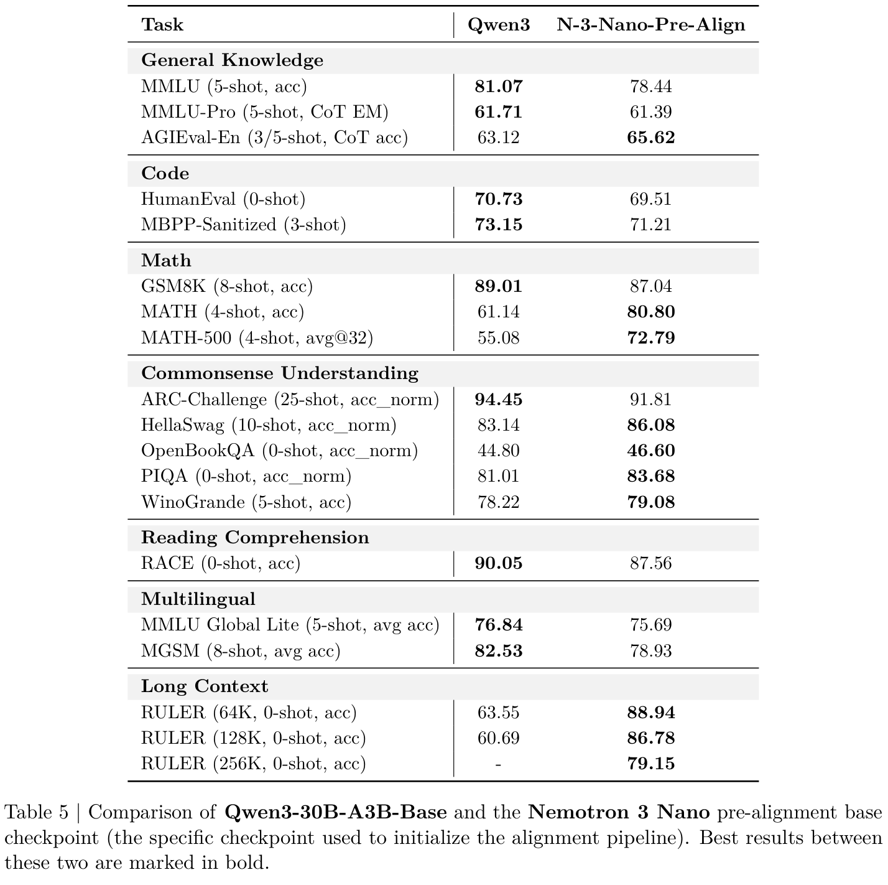
我们开发了以下两个 MMLU-redux 变体：
（1）MMLU-redux CoT。我们观察到许多 STEM 问题本质上需要逐步推理才能成功解决，而原始的不带 CoT 的多项选择格式无法充分反映这一点，因此创建了该变体。模型可能通过猜测或记忆得出某些答案。因此，我们为每个学科创建五个示例，每个示例附有详细的逐步解答，使我们能够在 5-shot CoT 设置下评估模型。
（2）MMLU-redux Tweak。MMLU 的广泛使用增加了因大量调优而产生的过拟合和基准饱和风险，因此我们引入该变体，以更严格地评估模型在相似但新颖的样本上的表现；这些样本在难度、风格、结构和格式方面与原始样本高度一致。我们使用 Qwen3-235B-A22B-Thinking-2507 修改原始测试样本，保留对相同底层概念、思想和技能的考察，同时改变数值、方程等具体细节。
评估结果见表 6。总体而言，启用 CoT 推理显著提高准确率，尤其是 STEM 学科。我们的模型从 CoT 中获得的提升大于 Qwen（平均提升分别为 +5.27 和 +0.79）。此外，我们观察到 Other 类别下的 Professional Accounting 任务显著提升，从 64.00 提高到 77.00（+13.00），因为该任务也高度依赖计算技能。
在 MMLU-redux Tweak 上，两个模型在非 STEM 类别中都取得明显提升，可能是因为许多非 STEM 问题考察领域知识，而改写问题由 Qwen3-235B-A22B-Thinking-2507 生成，其知识可能与被评估模型更为接近。我们在 STEM 中观察到不同趋势：Qwen 的准确率略微下降（−0.83），而我们模型的分数提高了 5.31。
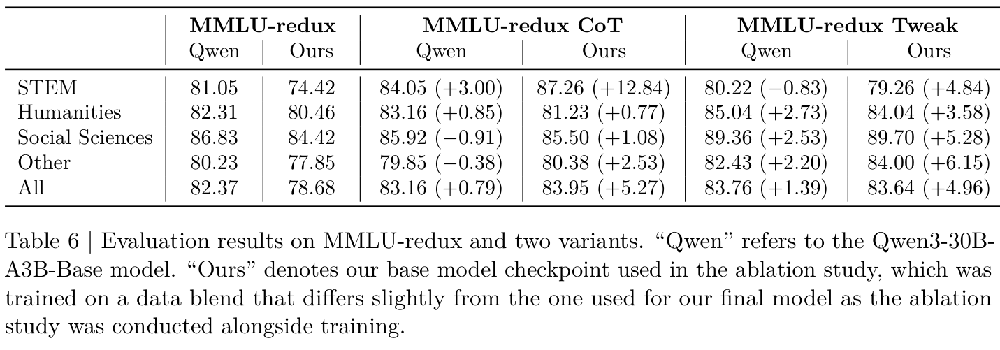
减少幻觉式工具使用是对齐实验的关键目标之一。虽然发布的模型不依赖 DPO，因为强化学习（RL）已经取得相当表现，但由于 DPO 简单且计算开销极低，我们仍将其作为补充技术进行探索。如下文所示，即使极少量 DPO 训练也能明显减少幻觉工具调用，并提高推理稳定性。为支持该分析，我们首先定义评估中什么构成幻觉式工具使用。
工具幻觉与幻觉率的定义。我们将工具幻觉定义为：系统消息未声明任何工具时，模型仍尝试调用工具的任何情况。在 No-Tools 和 Hallucination-Penalty 设置中，模型应完全依靠内部推理；因此，任何包含工具调用的输出，例如 Python 执行请求、搜索调用或任何工具特定的 API 格式，都被视为幻觉。
工具幻觉率是评估样本中出现这种非预期工具调用的比例。较高比例表明工具触发不当，接近零的比例则反映较好的校准和对环境约束的可靠遵循。
DPO 数据构建。为研究 DPO 对工具使用校准和推理表现的影响，我们使用 2,000 个推理任务构建 DPO 数据集：1,000 道数学题和 1,000 道 STEM 多项选择题。对于每个问题，模型生成 32 个 on-policy 解答，提供多样化候选行为。随后，原始生成结果经过 DPO 数据构建流程，根据正确性与工具使用条件分配偏好标签，总共产生约 50k 个偏好样本。后来我们发现，即使使用大幅缩小的数据集，模型的改善仍然存在；事实上，仅使用 10k 个偏好样本甚至更少也能取得相近收益。这进一步表明，本设置中的 DPO 计算成本低、样本效率高。为研究工具使用对齐，我们将数据划分为三类：（1）No-Tools：系统消息不提供工具，偏好标签仅由正确性决定；（2）With-Tools：工具可用，标签仅依赖最终答案的正确性；（3）Hallucination-Penalty：未声明工具，任何幻觉工具调用均标记为负偏好。这一结构使我们能联合评估纯推理能力、工具辅助推理和工具使用校准，同时提供源于多样化 on-policy 模型行为的丰富偏好信号。
训练设置。对于 DPO 实验，我们采用轻量训练配置，旨在尽量减少对 SFT 后模型的扰动，同时仍提供有意义的偏好学习信号。具体而言，学习率为 3e-6，batch 大小为 128，训练 50 步。SFT 损失系数为 0.2，偏好（DPO）损失系数为 1.0，KL 损失系数为 0.05。该设置强调偏好学习，同时保留较小的监督损失以稳定输出，并使用适度的 KL 惩罚防止过度偏离基础模型。该配置强调偏好学习，同时保留较小的监督损失以稳定输出，并使用适度的 KL 惩罚防止过度偏离基础模型。
结果。表 7 展示少量 DPO 训练对推理准确率和幻觉式工具使用的影响。尽管仅以适度学习率训练 50 步，我们仍观察到所有评估基准均持续改善。
对于 AIME25，准确率从 80.88% 提高到 84.58%，表明 DPO 不仅抑制不期望的工具相关行为，也提高整体解答质量。值得注意的是，该设置中原本已经较低的幻觉率从 1.25% 降至 0%，完全消除虚假工具调用。
GPQA 更具挑战性，基线幻觉率更高；DPO 同样带来显著收益。准确率从 65.15% 提高到 69.19%，幻觉率从 8.33% 大幅降至仅 0.7%。这证实，模型容易不确定或过度触发工具调用时，基于偏好的微调尤其有效。
总体而言，结果表明，即使极少量 DPO 训练也能明显减少幻觉式工具使用，同时提高推理准确率。这说明 DPO 为基于 RL 的对齐提供有价值的补充信号，在计算成本可以忽略的情况下，增强模型的可靠性
（此句接原文第 39 页；训练设置中的重复句保留原文。）
（接原文第 38 页。）
与校准。
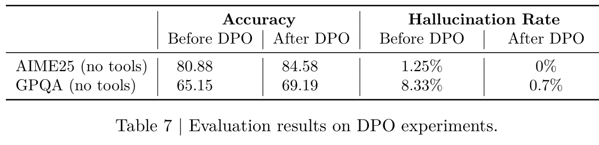
对于 RLHF 阶段，RM 训练数据包含与 SFT 安全子集相同的底层数据集，因此初始种子提示的分布相近。回答生成更加细致，以将过度拒绝和有害参与作为被拒绝回答处理。
所得回答对按照基于偏好的方案标注：对于有害提示，将 <安全、不安全> 补全标为 <选中、拒绝> 配对；对于安全提示，将 <安全、过度拒绝> 补全同样标为 <选中、拒绝> 配对。这一方法支持训练 RM，实现稳健的安全对齐，并缓解过度拒绝行为。
为确保多样性，我们使用五（5）个不同开源模型，为每个提示生成选中与拒绝回答对，随后应用必要过滤，仅保留安全回答（作为选中回答）和不安全或过度拒绝回答（作为拒绝回答），构建候选选中与拒绝回答列表。最后，为每个提示从候选中随机选取一组选中与拒绝回答对。
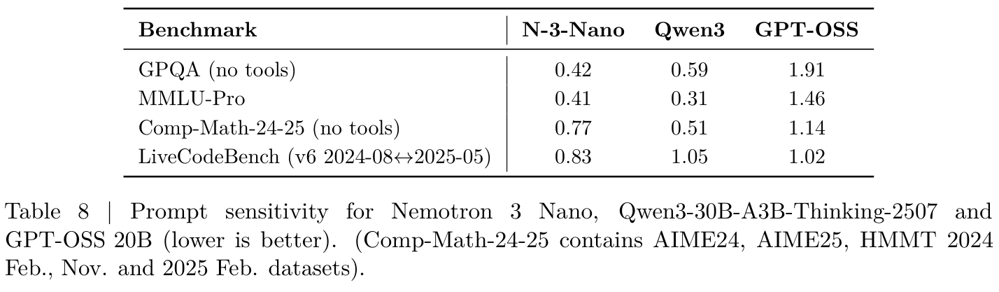
LLM 的预测可能对输入的细微变化敏感（Nalbandyan et al., 2025）。即使简单、非对抗性的修改（例如改变提示措辞、答案格式指令或问题相对于提示的位置），也可能使模型输出发生足以改变单个预测乃至整体基准准确率的变化。为降低因只选择一个提示而高估或低估准确率的风险，我们使用多个提示评估模型。这更能反映模型面对日常、真实提示变化时的稳定性。
为测量提示敏感性，我们为每个数据集构建一组提示，在措辞、指令细致程度（简略与详细）、问题位置（提示之前、中间或之后）和答案格式方面进行变化。对于每个提示，我们计算八个随机种子的平均准确率，再使用各提示平均值的标准差作为提示敏感性指标。提示敏感性结果见表 8。Nemotron 3 Nano 在所有数据集上的敏感性分数均低于 1，表明其对提示变化具有较强的稳定性与稳健性。